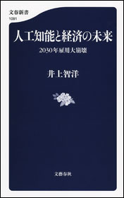
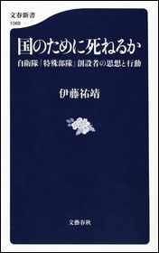
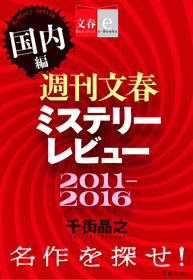

| 2017文藝春秋電子書籍ベスト100【文春e-Books】 | |
| 文藝春秋 | |
| 文藝春秋 (2017) | |
＊この電子書籍は横書きでレイアウトされています。
＊読む際のご注意、お断り等についてはこちら をお読み下さい。
はじめに
2017年は、どんな電子書籍が読まれたのでしょうか？
文藝春秋の電子書籍約3500点のダウンロード数を元に集計した、電子書籍ベスト100です。
今年の１位は『火花』（又吉直樹）、２位は『コンビニ人間』（村田沙耶香）と、昨年、一昨年の芥川賞受賞作が相変わらずの強さを発揮しました。
『火花』は文庫化され価格が下がったこと、ドラマ化・映画化され話題になったことがさらに読者数を伸ばした要因です。
電子版の発売からの累計ダウンロード数は約20万ダウンロードとなりました。文字ものの電子書籍では他に類を見ない数字になっています。
３位は、今年６月発売のノンフィクション『生涯投資家』（村上世彰）です。
株式取引の世界に復帰し動向が注目されている村上氏の、最初にして最後の著書で、半生記であり、投資理念の解説書でもあります。
電子書籍との相性がとてもいい作品で、各書店のランキングを席巻しました。
10位には、『アメリカの壁 小松左京e-booksセレクション』が入っています。
アメリカにトランプ大統領が誕生して以来、「いま読むべき作品」「現実がＳＦに近づいた」と、SNSを中心に注目を浴びた作品です。
短篇集の文庫『アメリカの壁』は長期品切れ中であったため、電子書籍ならではのスピード感を生かし、「アメリカの壁」だけを取り出して電子書籍オリジナルとして発売しました。
新聞等でも新たな試みとして紹介され、小松左京作品が見直される機会にもなりました。
また、小松左京作品では、新たな図版などを加え、電子オリジナルとして出版した『日本沈没 決定版』も20位にランクインしています。
電子書籍ならではの形態として「合本」があります。シリーズ全作を一気に買うことができる合本は、セールなどで特に強い商品です。
ランクインした、66位『合本 鬼平犯科帳（一）～（二十四）』（池波正太郎）、76位『合本 64（ロクヨン）』（横山秀夫）、82位『合本 坂の上の雲』（司馬 太郎）などは、高額商品にも関わらず確実に読者をつかんでいます。
太郎）などは、高額商品にも関わらず確実に読者をつかんでいます。
今年は、巻末に、文藝春秋が積極的に取り組んでいる、電子オリジナルのコンテンツ「文春e-Books」レーベルのベスト20もつけました。
世代を超えて読まれている作品、新しい試みなど、バラエティに富んだランキングになっているのが今年の特徴です。
是非、1冊でも多くの作品に「電子書籍」で触れてみて下さい。
2017年12月1日 文藝春秋電子書籍編集部
注意事項
●このランキングは2017年１年間の、全電子書店の電子書籍売上を集計したものが基になっています
●『６４』『坂の上の雲』など複数巻がランキングに入っている場合、１冊のみを表示しています
● のアイコンをクリックすると、その書籍の商品詳細頁に飛びます
のアイコンをクリックすると、その書籍の商品詳細頁に飛びます
2017 文藝春秋 電子書籍ベスト100
2017 Bungeishunju e-books Best 100
１
火花
 又吉直樹
又吉直樹
配信開始日 2017/02/10
第153回芥川賞を受賞し、2015年の話題をさらった「火花」が文庫化。受賞記念エッセイ「芥川龍之介への手紙」を併録。
売れない芸人の徳永は、、天才肌の先輩芸人・神谷と出会い、師と仰ぐ。
神谷の伝記を書くことを乞われ、共に過ごす時間が増えるが、やがて二人は別の道を歩むことになる。
笑いとは何か、人間とは何かを描ききったデビュー小説。
Netflixでのドラマ化に続き、2017年11月には菅田将暉、桐谷健太Ｗ主演で映画化。
２
コンビニ人間
村田沙耶香
配信開始日 2016/07/27
第155回芥川賞受賞作。
36歳未婚女性、古倉恵子。
大学卒業後も就職せず、コンビニのバイトは18年目。これまで彼氏なし。
オープン当初からスマイルマート日色駅前店で働き続け、変わりゆくメンバーを見送りながら、店長は8人目だ。
日々食べるのはコンビニ食、夢の中でもコンビニのレジを打ち、清潔なコンビニの風景と「いらっしゃいませ！」の掛け声が、毎日の安らかな眠りをもたらしてくれる。
仕事も家庭もある同窓生たちからどんなに不思議がられても、完璧なマニュアルの存在するコンビニこそが、私を世界の正常な「部品」にしてくれる──。
ある日、婚活目的の新入り男性、白羽がやってきて、そんなコンビニ的生き方は「恥ずかしくないのか」とつきつけられるが......。
現代の実存を問い、正常と異常の境目がゆらぐ衝撃のリアリズム小説。
３
生涯投資家
村上世彰
配信開始日 2017/06/21
「お金儲けは悪いことですか？」
2006年6月、ニッポン放送株をめぐるインサイダー取引を行った容疑で逮捕され、有罪判決を受けた村上ファンドの村上世彰氏。
本書は、株の世界に復帰し動向が注目されている村上氏の、最初にして最後の著書で、半生記であり、投資理念の解説書でもある。灘高―東大法―通産省を歩んだエリートがなぜ投資の世界に飛び込み、いったい何を試みたのか。投資哲学、日本企業、日本の経営者たちへの見方とは。
村上ファンドを率いて日本に旋風を巻き起こした著者が、その実像と思いを自ら書き上げた話題作。
４
情報なき国家の悲劇 大本営参謀の情報戦記
堀 栄三
配信開始日 2015/08/07
太平洋戦中は大本営情報参謀として米軍の作戦を次々と予測的中させて名を馳せ、戦後は自衛隊情報室長を務めた著者が、その稀有な体験を回顧し、情報にうとい日本型組織の欠陥を衝く。
５
サイコパス
中野信子
配信開始日 2016/11/18
平気でウソをつき、罪悪感ゼロ......そんな「あの人」の脳には秘密があった！
外見はクールで魅力的。会話やプレゼンテーションも抜群に面白い。しかし、じつはトンでもないウソつきである。不正や捏造が露見しても、まったく恥じることなく平然としている。ときには、あたかも自分が被害者であるかのようにふるまう。残虐な殺人や善良な人を陥れる犯罪を冷静沈着に遂行する。他人を利用することに長け、人の痛みなどこれっぽっちも感じない。
──昨今、こうした人物が世間を騒がせています。しかも、この種の人々を擁護する人も少なくありません。そうした人物は高い確率で「サイコパス」なのです。
もともと「サイコパス」とは連続殺人鬼などの反社会的な人格を説明するために開発された診断上の概念です。しかし精神医学ではいまだ明確なカテゴリーに分類されておらず、誤ったイメージやぼんやりとした印象が流布していました。
ところが近年、脳科学の劇的な進歩により、サイコパスの正体が徐々に明らかになっています。脳内の器質のうち、他者に対する共感性や「痛み」を認識する部分の働きが、一般人とサイコパスとされる人々では大きく違うことがわかってきたのです。
しかも、サイコパスとは必ずしも冷酷で残虐な犯罪者ばかりではないのです。大企業のCEO、政治家、弁護士、外科医など、大胆な決断をしなければならない職業の人にサイコパシー傾向の高い人が多いという研究結果もあります。
最新脳科学が、私たちの脳に隠されたミステリーを解き明かします。
６
そして生活はつづく
星野 源
配信開始日 2015/10/09
俳優で音楽家、星野源はじめてのエッセイ集！
携帯電話の料金を払い忘れても、部屋が荒れ放題でも、人付き合いが苦手でも、誰にでも朝日は昇り、何があっても生活はつづいていく。ならば、そんな素晴らしくない日常を、つまらない生活をおもしろがろう！
音楽家で俳優の星野源、初めてのエッセイ集。俳優・きたろうとの文庫版特別対談「く...そして生活はつづく」も収録。
７
この社会で戦う君に「知の世界地図」をあげよう 池上彰教授の東工大講義
池上彰

配信開始日 2015/03/13
東京工業大学の教授に就任した池上彰さん。理系学生への講義の内容が一冊に。
「悪い会社・優れた経営者の見分け方」「なぜ優秀な理系学生がオウム真理教に？」「君ならサムスンに移籍するか？」「日本国憲法は改正すべきか」「リーマン・ショックとは何だったのか」「君は年金に入るべきか」「なぜ反日運動が起きるのか」etc.
知るべきことを分かりやすく。ビジネスマンも必読です。
８
さよなら、カルト村。 思春期から村を出るまで
高田かや
配信開始日 2017/02/03
「所有のない社会」を目指す「カルト村」で生まれ、過酷な労働や理不尽な掟に縛られた村の暮らしを受け入れて育ってきた著者は、なぜ自ら村を出たのか？
村で過ごした13歳から19歳までの青春期を描き、当時のマスコミを騒がせた村の実態に迫る、衝撃の実録コミックエッセイ。
朝日新聞、毎日新聞、新潮45、TVブロス、アンアンなど、数多くの書評欄で取り上げられ、「その後の話が読みたい！」の声が殺到した話題作『カルト村で生まれました。』の待望の続編！
思春期をむかえた村の子の毎日（音楽、男女交際、一般の本を読むことは禁止。男子の部屋も女子が掃除！）。「個別ミーティング」や内容を大人にチェックされる「日記」など、思想をコントロールする村独自の新たなシステムがスタート。結婚相手は年の離れたおじさん!? 村の「調整結婚」など驚愕のエピソードが明らかに──。
９
『ユニクロ帝国の光と影』著者の渾身レポート ユニクロ潜入一年【文春e-Books】
横田増生
配信開始日 2017/01/27
「ユニクロは私の著書を名誉毀損として二億二千万円の損害賠償を求める裁判を起こした。私は勝訴したが、柳井社長はその後のインタビューで『悪口を言っているのは僕と会ったことがない人がほとんど。うちの会社で働いてもらって、どういう企業なのかをぜひ体験してもらいたい』と語った。ならば実際に働きながら取材しよう。以後八百時間を超える労働から浮かび上がったのは、サービス残業と人手不足の実態だ」。
『ユニクロ帝国の光と影』の筆者・横田増生氏の渾身ルポ。
「週刊文春」に掲載されるや大きな反響を呼んだ連載記事の第１回と２回を再構成して電子書籍オリジナルとして発売した電子書籍オリジナル作品。
＊現在は加筆・推敲を重ねた単行本版『ユニクロ潜入一年』が発売中です
10
アメリカの壁 小松左京e-booksセレクション【文春e-Books】
小松左京
配信開始日 2017/02/10
アメリカにトランプ大統領が誕生して以来、「いま読むべき作品」「現実がＳＦに近づいた」と改めて注目を浴びた作品。
ときは冷戦時代。ベトナム戦争以降のアメリカは国外問題への関心を急速に失いつつあった。「輝けるアメリカ」「美しいアメリカ」というスローガンを掲げて当選した大統領は、国内問題には熱心だが、対外政策はどこか投げやり。
そんなとき、アメリカは突然、出現した「壁」に囲まれ、外部との交通、通信が一切、遮断されてしまう。しかし、なぜか大規模なパニックは発生せず、「アメリカは生きつづけるだろう」と語る大統領のもと、アメリカ国民は意外に落ち着いていた。
「どう考えたって......これはおかしい」
アメリカ国内に閉じ込められた日本人ライターは、そんな状況を不審に感じて調査を始める。「アメリカは、"外"の世界に、ひどくいやな形で傷つき、萎縮 しはじめた。そいつは認めるだろ？ 今の大統領は、その方向をさらに強め、妙な具合にカーブさせた。彼は"幸福な新天地時代"のアメリカのノスタルジイに訴え、そこからの再出発を考えているみたいだった」「たしかにアメリカにとっては、"すてきな孤立"だ」
そして男がたどりついた真相とは......。
1982年に文春文庫から発売された短編集『アメリカの壁』から、表題作「アメリカの壁」だけを取り出し、電子書籍オリジナルとして発売！
11
米中もし戦わば 戦争の地政学
ピーター・ナヴァロ
配信開始日 2016/12/02
トランプ米大統領の政策顧問が執筆！
・経済成長のために必要な原油の中東からの輸送ルートは、太平洋地域の制海権をもつアメリカによって抑えられている。
・空母と同盟国の基地を主体にした米軍に対抗するため、安価な移動式のミサイルで叩くという「非対称兵器」の開発を中国は進めてきた。
・南シナ海や尖閣諸島の海底に巨大な油田が発見された。
・南シナ海や尖閣諸島を囲む第一列島線。その内側の制海権を中国は握りつつある。
・歴史上、既存の大国と台頭する新興国が対峙したとき、戦争に至る確率は70%を超える。
経済、政治、軍の内情......。
最前線の情報をもとに、米中戦争の地政学を鮮やかに読み解く。
トランプの政策顧問による分析で、日本の未来が見えてくる！
解説:飯田将史（防衛省防衛研究所 地域研究部 中国研究室 主任研究官）
12
日本のいちばん長い日（決定版） 運命の八月十五日
半藤 一利

配信開始日 2001/07/20
近代日本の"運命の一日"を描いた不朽の名作。
太平洋戦争を終結させるべく、天皇の「聖断」に従い和平への努力を続ける首相鈴木貫太郎をはじめとする人々と、徹底抗戦を主張して蹶起せんとした青年将校たち──。
玉音放送を敢行しようとする政府関係者に対して、陸軍の一部軍人は近衛連隊を率いて皇居に乱入した。そのあまりにも対照的な動きこそ、この一日の長さを象徴するものであった。
玉音放送が流れた昭和二十年八月十五日正午に至る一昼夜に繰り広げられた二十四幕の人間ドラマ。
13
カルト村で生まれました。
高田かや
配信開始日 2016/02/12
「平成の話とは思えない！」「こんな村があるなんて！」と、WEB連載時から大反響!! 衝撃的な初投稿作品が単行本に！
「所有のない社会」を目指す「カルト村」で生まれ、19歳のときに自分の意志で村を出た著者が、両親と離され、労働、空腹、体罰が当たり前の暮らしを送っていた少女時代を回想して描いた「実録コミックエッセイ」。
〈カルト村ってどんなとこ？〉
●大人と子供の生活空間が別々
●朝5時半起床で労働
●布団は2人で1組
●食事は昼と夜のみ
●卵ミルクを飲ませられる
●お小遣いはもらえない
●すべてのモノが共有で、服もお下がり
●男子は丸刈り、女子はショートカット
●ビンタ、正座、食事抜きなど体罰は当たり前
●手紙は検閲される
●テレビは「日本昔ばなし」のみ
●漫画は禁止、ペットも飼えない
●自然はいっぱい。探険など外遊びは楽しい♪
14
世界を変えた10冊の本
池上 彰

配信開始日 2014/03/14
何かと話題の『アンネの日記』、『コーラン』『種の起源』、ケインズ、フリードマンの経済書まで。
『聖書』の基礎を知ることで見えてくる歴史の流れとは？ 革命の原動力となった『資本論』の論理とは？ 世界に大きな影響を与えた10冊の本を池上さんが厳選、その内容をわかりやすく紹介するとともに、歴史的意義を解き明かします。
私たちが生きる現代を形作っている思想や、日々メディアで報じられている国際問題の源泉がこの1冊でわかる！
15
この日本で生きる君が知っておくべき「戦後史の学び方」 池上彰教授の東工大講義 日本篇
池上 彰

配信開始日 2015/07/10
敗戦から高度成長に至ったわけ、学校では教えない「日教組」、アベノミクスとバブルの教訓まで。池上彰教授のわかりやすい戦後史講義を実況中継！
歴史の授業ではなおざりにされがちな「日本の戦後史」ですが、社会に出るとこれほど「使える」分野はありません。そこで、池上彰教授の東工大講義シリーズ第２弾は、『この日本で生きる君が知っておくべき「戦後史の学び方」』。平成生まれの学生たちに、日本が敗戦から不死鳥のように甦った道筋から、現在の問題を解くヒントを教えます。
「アベノミクスはバブルから学べるか？」「政権交代の不思議な歴史」「学校では絶対に教えない『日教組』」など、ビジネスパーソンにも参考になることばかり。
16
勉強の哲学 来たるべきバカのために
千葉雅也
配信開始日 2017/04/14
勉強ができるようになるためには、変身が必要だ。
勉強とは、かつての自分を失うことである。
深い勉強とは、恐るべき変身に身を投じることであり、
それは恐るべき快楽に身を浸すことである。
そして何か新しい生き方を求めるときが、
勉強に取り組む最高のチャンスとなる。
なぜ人は勉強するのか？ 勉強嫌いな人が勉強に取り組むにはどうすべきなのか？
思想界をリードする気鋭の哲学者が、「有限化」「切断」「中断」の技法とともに、独学で勉強するための方法論を追究した本格的勉強論。
【目次】
第1章 勉強と言語──言語偏重の人になる
第2章 アイロニー、ユーモア、ナンセンス
第3章 決断ではなく中断
第4章 勉強を有限化する技術
17
潜る女 アナザーフェイス８
堂場瞬一
配信開始日 2017/03/10
今度の事件は結婚詐欺！ 大人気の警察小説シリーズも佳境の第８弾
知能犯を扱う捜査二課の同期・茂山から、結婚詐欺グループの一員と思しき女・荒川美智留の内偵を依頼された大友鉄。美智留は元シンクロ選手でスポーツジムのインストラクター。真面目で魅力的な女性に見えるが、大友は得意の演技力で美智留に接近し、事件の裏に潜む複雑な事情に分け入っていく。
18
色彩を持たない多崎つくると、彼の巡礼の年
村上春樹
配信開始日 2015/12/04
多崎つくる、鉄道の駅をつくるのが仕事。名古屋での高校時代、四人の男女の親友と完璧な調和を成す関係を結んでいたが、大学時代のある日突然、四人から絶縁を申し渡された。
何の理由も告げられずに──。
死の淵を一時さ迷い、漂うように生きてきたつくるは、新しい年上の恋人・沙羅に促され、あの時なにが起きたのか探り始めるのだった。
全米第一位にも輝いたベストセラー！
19
学校では教えない「社会人のための現代史」 池上彰教授の東工大講義 国際篇
池上 彰

配信開始日 2015/11/13
冷戦後の15年を知れば、混迷の現代が見える！
EUの挫折、イスラム国の登場、エネルギー戦争、反日の原点──すべて東西冷戦後に原点が。ビジネスにも投資にも現代史は必須です！
20
日本沈没 決定版【文春e-Books】
小松 左京
配信開始日 2017/07/26
日本SF小説史上最大のヒット作、その決定版が電子書籍オリジナルで登場。文庫の上下巻が一冊になりました。
【あらすじ】 日本各地で地震が続くなか、小笠原諸島近海にあった無人島が一晩で海中に沈んだ。調査のため潜水艇に乗り込んだ地球物理学者の田所博士は、深海の異変を目の当たりにして、恐るべき予測を唱えた。
──早ければ二年以内に、日本列島の大部分は海面下に沈む！
田所博士を中心に気鋭の学者たちが地質的大変動の調査に取り組むと同時に、政府も日本民族の生き残りをかけて、国民の海外移住と資産の移転計画を進めようとする。しかし第二次関東大震災をはじめ、様ざまな災害が発生。想定外のスピードで事態は悪化していく。はたして日本民族は生き残ることができるのか。
大災害やパニックのシミュレーションにとどまらず、組織論や危機管理論、日本人論といった様ざまな要素をもつ本作は時代を超えた輝きをはなっており、小説は上下二巻で発行総部数は460万部超。二度の映画化、テレビ化、マンガ化、いずれも大成功をおさめている。
●『日本沈没 決定版』の４大特長●
１．世界的なアーティストの生賴範義氏の作品を用いた電子版オリジナル表紙
２．電子書籍としては初の上下一体版
３．ストーリーが分かりやすくなるオリジナル図版を収録
４．初公開資料などを含め、名作誕生の秘話を遺族が詳細に解説
まだ読んでいない方はもちろん、小松左京氏の熱烈なファンまで満足できるコンテンツです。
21
検察側の罪人（上）
雫井脩介
配信開始日 2017/03/10
人が人を裁くとは？ 雫井ミステリーの最高傑作
蒲田の老夫婦刺殺事件の容疑者の中に、時効事件の重要参考人・松倉の名前を見つけた最上検事は、今度こそ法の裁きを受けさせるべく松倉を追い込んでいく。
最上に心酔する若手検事の沖野は厳しい尋問で松倉を締め上げるが、最上の強引なやり方に疑問を抱くようになる。
正義のあり方を根本から問う、雫井ミステリー最高傑作！
22
オレたちバブル入行組
池井戸 潤

配信開始日 2013/08/02
大きな話題を呼んだ『半沢直樹』（堺雅人主演）原作！
バブル期に大手銀行に入行し、今は大阪西支店融資課長の半沢直樹。支店長の命令で無理に融資の承認を取り付けた会社が倒産した。すべての責任を半沢に押しつけようと暗躍する支店長。四面楚歌の半沢に残された手は債権回収しかない──。
夢多かりし新人時代は去り、気がつけば辛い中間管理職。しかも入行以来いいことなしのバブル世代。しかし嘆いてばかりじゃ始まらない。
顔を上げろ、プライドを捨てるな、そのうち負け分を取り戻してやる！
働く者すべての勇気を奮い起こさせる痛快エンターテインメント。
23
羊と鋼の森
宮下奈都
配信開始日 2015/10/02
2016年本屋大賞 大賞受賞作
ゆるされている。世界と調和している。それがどんなに素晴らしいことか。言葉で伝えきれないなら、音で表せるようになればいい。
「才能があるから生きていくんじゃない。そんなもの、あったって、なくたって、生きていくんだ。あるのかないのかわからない、そんなものにふりまわされるのはごめんだ。もっと確かなものを、この手で探り当てていくしかない。（本文より）」
ピアノの調律に魅せられた一人の青年。彼が調律師として、人として成長する姿を温かく静謐な筆致で綴った、祝福に満ちた長編小説。
24
八咫烏シリーズ外伝 ふゆきにおもう【文春e-Books】
阿部智里
配信開始日 2017/07/28
新世代和風ファンタジー「八咫烏シリーズ」外伝
行方不明になった垂氷郷の郷長の次男・雪哉と三男の雪稚。長男の雪馬と母の梓は必死で幼い彼らを探す。実は雪哉だけは産みの母が異なる北家当主の姫君だった。
雪哉の出生の秘密が明らかになる一作。
25
八咫烏シリーズ外伝 しのぶひと【文春e-Books】
阿部智里
配信開始日 2017/07/28
新世代和風ファンタジー「八咫烏シリーズ」外伝
端午の節句で「角落とし」と呼ばれる神事の花形射手を務めた雪哉。その成長ぶりに驚いた桜花宮の筆頭女房・真赭の薄のもとに、思いがけない縁談の話が......。
第四巻『空棺の烏』の舞台・勁草院での二年目にあたる草牙時代のエピソード。
26
戦争にチャンスを与えよ
エドワード・ルトワック
配信開始日 2017/04/21
国連・NGO・他国の介入が戦争を長引かせるのだ！
ベストセラー『中国4.0』の著者、待望の最新作！
著者は古今東西の歴史に通じる一方で、実際の戦場も経験しており、各国の安全保障アドバイザーとして活躍しています。そのルトワック氏はこう断言しています。良心や正義感、人道的配慮にもとづく国連、NGO、他国による中途半端な介入が、「戦争」を終わらせるのではなく、「戦争」を長引かせている、と。なにも戦争を奨励しているわけではありません。「本当の平和は、戦争の当事者自身が戦争を倦むほど、徹底的に戦った後でなければ訪れない」のです。「難民支援が難民を永続化させる」「軍事力ではなく同盟関係がすべてを制す」など、見誤りがちな「戦争」と「平和」の見方を正してくれます。
また、「平和のためにこそ尖閣に武装人員を常駐させろ」「日本の「あいまいさ」が中国の誤解を生む」「北朝鮮の核・ミサイル能力を侮るな」「日本が国連常任理事国になる秘策」といった日本への具体的な提言も満載。
27
人工知能と経済の未来 2030年雇用大崩壊
井上智洋

配信開始日 2016/07/29
小説を書いたり、囲碁で世界的な強豪を負かしたりと、AIが目覚しい発展を遂げています。このまま技術開発が進んでいくとどうなるか......。
著者は「2030年には人間並みの知性を持ったAIが登場する可能性がある」と指摘。そうなるとホワイトカラー事務職は真っ先に職を奪われ、医者も弁護士も失業の危機に瀕するでしょう。「最大で人口の9割が失業する可能性もある」と著者は推定しています。
では、一部の資本家以外は飢えて死ぬしかないのでしょうか？ AIによって奪われた労働は、BI（ベーシックインカム）で補完しよう！
それが著者の提言です。AIの発達が人類の幸福へつながるためにはどうすればいいのか。気鋭の経済学者の大胆予測。
28
八咫烏シリーズ外伝 すみのさくら【文春e-Books】
阿部智里

配信開始日 2017/08/04
新世代和風ファンタジー「八咫烏シリーズ」外伝
突然、南家当主の姫君の身分を剥奪された墨子。理由も分からないまま両親の死を知らされ、山烏の孤児たちと暮らしていたある日、宗家の若宮がやってくる。
第一巻『烏に単は似合わない』で浜木綿が見せた行動の理由とは。彼女の忘れられない過去を描く短篇。
29
イニシエーション・ラブ
乾 くるみ
配信開始日 2007/09/20
「必ず二回読みたくなる」と絶賛された傑作ミステリー。
僕がマユに出会ったのは、人数が足りないからと呼びだされた合コンの席。理系学生の僕と、歯科衛生士の彼女。夏の海へのドライブ。ややオクテで真面目な僕らは、やがて恋に落ちて......。甘美で、ときにほろ苦い青春のひとときを瑞々しい筆致で描いた青春小説──と思いきや、最後から二つめのセリフ（絶対に先に読まないで！）で、本書はまったく違った物語に変貌してしまう。
2015年映画化（主演 松田翔太、前田敦子、木村文乃／監督 堤幸彦）
30
日々我人間
桜 玉吉
配信開始日 2016/12/02
ひょんなことから数年を過ごした東京の漫画喫茶に別れを告げ、伊豆の山中に居を構えた玉さんを襲う、ネコ・シカ・ムカデ！
週刊文春好評連載、桜玉吉『日々我人間』がついに一冊に！
「いったいなぜ？」と反響を呼んだ週刊文春連載開始からはや3年、待望の単行本化!! 「すぐに休載するんでは？」などの憶測もなんのその、ほぼ隔週連載から毎号掲載になっても見事皆勤賞。その3年分150回をどーんとお届け。
激動の3年間の前半は東京・漫喫編、後半は伊豆編。
隣人の音に悩まされる満喫の狭い個室から、野生生物の襲来に悩まされる山荘へと生活はガラリと変わっても（変わってない？）、玉吉節は健在！
「週刊文春お正月スペシャル号 丸ごと1冊タンマ君！」に寄稿した「タンマさん」もそっと収録。
31
臆病者のための億万長者入門
橘 玲
配信開始日 2014/06/20
株を始めるならこの１冊、という信用を得てロングセラーとなった『臆病者のための株入門』から８年。『臆病者のための裁判入門』に続き、シリーズ第３弾が出ました！
今回は株だけではありません。宝くじ、年金、生命保険、株、投資信託、為替、不動産......。「年金崩壊」「国家破産」等々不安が尽きない時代にどうすれば「虎の子」を守れ、増やせるのか？ あなたの疑問にすべて答えます。
「億万長者になるのは簡単だ」「宝くじを買う人は資産運用に成功できない」「資産運用の面から見ればマイホームはおすすめできない」「高金利の通貨は長期的には安くなる」など、読み進めるうちに今まで抱いてきた常識が著者の明晰な論理によってガラガラと崩れさります。
不安で先行きの見えない時代だからこそ知っておきたい「資産運用の常識」が詰まった一冊です。
32
AI経営で会社は甦る
冨山和彦
配信開始日 2017/03/31
AI革命で「産業構造」「稼ぐ仕組み」が激変する。
カネボウ、JALを建て直し、AIにも精通した
企業再生の第一人者による「AI時代の経営論」。
33
オレたち花のバブル組
池井戸 潤
配信開始日 2013/08/02
ドラマ『半沢直樹』（堺雅人主演）原作本第２弾！
東京中央銀行のバブル入行組・半沢直樹に押しつけられた「頭取命令」──それは巨額損失を出した老舗ホテルの再建。銀行内部の見えざる暗躍、金融庁の「最強の検査官」との対決。出向先での執拗ないじめ。次から次へと襲い来る逆境を、半沢はおのれの正義で迎え撃つ。
オレたちは絶対に負けられない。まとめて面倒みてやる。やられたら倍返しだ！
"バブル組"の男たちのプライドが胸を熱くさせる。
34
未来の働き方を考えよう 人生は二回、生きられる
ちきりん
配信開始日 2015/11/10
年金受給開始年齢の引き上げ、定年の延長など、働き方をめぐる環境は近年驚くべきスピードで変化し続けている。そんな現代日本にあって、あなたは20代で選んだ仕事を70代まで続けるの？
月間200万PVをほこる人気ブロガーちきりんが「人生を二回生きる」働き方を具体的に提案する人生論。 文庫版の解説、柳川範之東大教授による「明るい働き方を実現するための指南書」も収録。
電子書籍版には刊行記念対談２本を特別収録です！
・ちきりん×柳川範之「人生は二回、生きられる？」トーク ライブ・レポート
・ちきりん×安藤美冬「私たちの未来の働き方を考えよう」
35
闇ウェブ
セキュリティ集団スプラウト
配信開始日 2016/07/29
買えないものは何もない！ 悪魔のネットショッピング。
麻薬、児童ポルノ、偽造パスポート、偽札、個人情報、サイバー攻撃、殺人請負、武器......「秘匿通信技術」と「ビットコイン」が生みだしたサイバー空間の深海にうごめく「無法地帯」の驚愕の実態！ 私たちの生活を便利にしてくれるインターネットの奥底には異様な世界があった。
自分の家族や会社を守るための必読書。
36
対岸の彼女
角田 光代
配信開始日 2008/03/20
いじめで群馬に転校してきた女子高生のアオちんは、ナナコと親友になった。専業主婦の小夜子はベンチャー企業の女社長・葵にスカウトされ、ハウスクリーニングの仕事を始める。立場が違ってもわかりあえる、どこかにいける、と思っていたのに......結婚する女、しない女、子供を持つ女、持たない女、たったそれだけのことで、なぜ女どうし、わかりあえなくなるんだろう。
女性の友情と亀裂、そしてその先を、切なくリアルに描く傑作長編。
第132回直木賞受賞作。
37
民王
池井戸 潤

配信開始日 2014/08/01
夢かうつつか、新手のテロか？ 総理と息子の非常事態が発生。
「お前ら、そんな仕事して恥ずかしいと思わないのか。目をさましやがれ！」
漢字の読めない政治家、酔っぱらい大臣、揚げ足取りのマスコミ、バカ大学生が入り乱れ、巨大な陰謀をめぐる痛快劇の幕が切って落とされた。
総理の父とドラ息子が見つけた真実のカケラとは!?
謎が謎をよぶ、痛快政治エンタメ！
38
弥栄の烏
阿部智里
配信開始日 2017/07/28
八咫烏の一族が支配する異世界・山内。
「うつけ」の若宮と「ぼんくら」近習の少年・雪哉という若き主従の活躍を中心に、賢く華やかな宮廷の姫君、若宮を取り巻く護衛の青年たちが繰り広げる、お妃選びと権力争い、友情と断絶、成長と再生を描いた壮大な和風ファンタジー。
一冊ごとに表情を変えながら読者を魅了、80万部を突破したこの物語の第一部完結篇「弥栄の烏」は、主人公・雪哉の弟が武官訓練所である剄草院に入学準備する場面から。その実力を認められ、全軍の参謀役にまでなった雪哉、敵対する勢力を抑えて朝廷の実権を掌握した若宮が治める山内を大地震が襲い、開かれた禁門の扉の向こうには、山内を恐怖に陥れた「人喰い大猿」が現れた。ついに始まった、猿と八咫烏の最終決戦。若宮は名前を取り戻し、真の金烏となれるのか。山内は栄えるのか、それとも滅びに向かうのか──
松本清張賞を受賞したデビュー作『烏に単は似合わない』から5年。現・大学院生の著者25歳が作り上げる異世界和風ファンタジーシリーズ第6巻、堂々のクライマックス！
39
チェ・ゲバラ伝 増補版
三好 徹
配信開始日 2014/04/11
１冊でたどる「チェ・ゲバラ」の生涯
南米アルゼンチンの裕福な家に生まれ、医師になるも、貧困と圧政と腐敗の覆う現実を憂い、キューバ革命へと身を投じたチェ・ゲバラ。彼はどのように生き、どのように死んだのか。
いまなお全世界で語られる伝説の男、ゲバラを描いた不朽の傑作評伝に、さらに判明した事がらを書き加えた増補最新版。
40
女のいない男たち
村上春樹
配信開始日 2016/10/07
舞台俳優・家福をさいなみ続ける亡き妻の記憶。彼女はなぜあの男と関係したのかを追う「ドライブ・マイ・カー」。妻に去られた男は会社を辞めバーを始めたが、ある時を境に店を怪しい気配が包み謎に追いかけられる「木野」。封印されていた記憶の数々を解くには今しかない。
見慣れたはずのこの世界に潜む秘密を探る６つの物語。
村上春樹の最新短篇集。
41
望郷
湊かなえ
配信開始日 2016/09/02
暗い海に青く輝いた星のような光。
母と二人で暮らす幼い私の前に現れて世話を焼いてくれた"おっさん"が海に出現させた不思議な光。そして今、私は彼の心の中にあった秘密を知る...日本推理作家協会賞受賞作「海の星」他、島に生まれた人たちの島への愛と憎しみが生む謎を、自らも瀬戸内の"島"に生まれたミステリの名手が、万感の思いを込めて描く、心に刺さる連作短編集。
2016年に、広末涼子、伊藤淳史、濱田岳出演でドラマ化。
42
寝ながら学べる構造主義
内田 樹
配信開始日 2004/04/20
構造主義という思想がどれほど難解とはいえ、それを構築した思想家たちだって「人間はどういうふうにものを考え、感じ、行動するのか」という問いに答えようとしていることに変わりはありません。ただ、その問いへの踏み込み方が、常人より強く、深い、というだけのことです。ですから、じっくり耳を傾ければ、「ああ、なるほどなるほど、そういうことって、たしかにあるよね」と得心がゆくはずなのです。（「まえがき」より）
43
「空気」の研究
山本七平
配信開始日 2013/06/07
昭和期以前の人びとには「その場の空気に左右される」ことを「恥」と考える一面があった。しかし、現代の日本では"空気"はある種の"絶対権威"のように驚くべき力をふるっている。
あらゆる論理や主張を超えて、人びとを拘束するこの怪物の正体を解明し、日本人に独得の伝統的発想、心的秩序、体制を探った名著。1983年刊行の超ロングセラー！
44
打ちのめされるようなすごい本
米原万里
配信開始日 2014/12/05
「ああ、私が10人いれば、すべての療法を試してみるのに」。
2006年に逝った著者が、がんと闘いつつ力をふり絞って執筆した「私の読書日記」（週刊文春連載）に加え、1995年から2005年まで10年間の全書評を収録した最初で最後の書評集。
ロシア語会議通訳、エッセイスト、作家として56年の生涯を走り抜けた米原万里を知るには必読の一冊。
この本には、彼女の才気とユーモアが詰まっています。
45
言ってはいけない格差の真実【文春e-Books】
橘 玲
配信開始日 2016/12/09
「教育に税金を投じるのはムダ」「雇用対策の大変は無意味」「経済格差は知能格差だ」など、日本経済のタブーとされている８項目の現実に人気作家が迫った問題作。
「月刊文藝春秋2016年10月号」掲載の記事を再構成して電子書籍化。
46
僕たちが何者でもなかった頃の話をしよう
山中伸弥 羽生善治 是枝裕和 山極壽一 永田和宏
配信開始日 2017/02/24
あんな偉い人でも、なんだ自分と同じじゃないかということを感じとってほしい ──永田和宏「はじめに」より
細胞生物学者にして、歌人としても著名な永田和宏・京都産業大教授から、あこがれの対象を持っていない若い世代へおくるメッセージ。
各界を代表する人物の講演と、永田氏との対談を収録。
「あんなに偉い人でも自分と同じ失敗や挫折を経験してきたのかと、また将来への不安や焦りもあったのかと、その場で驚き、感じとってほしい。それはそのまま、自分の将来にひとつの可能性を開くことになるはずである。ひょっとしたら自分だってと思えるということは、それに向かって努力してみようかと思うことでもあろう。初めから圏外のものとして除外するのではなく、ひょっとしたらと思えることだけでも、その若さに可能性を付与することになるはずである」
第１章 山中伸弥（京都大学iPS細胞研究所所長）
第２章 羽生善治（将棋棋士）
第３章 是枝裕和（映画監督）「映画を撮りながら考えたこと」
第４章 山極壽一（京都大学総長、霊長類学者）
47
あと100円でもう一品！ 楽天レシピ 節約お料理ベスト100【文春e-Books】
文藝春秋・編
配信開始日 2015/11/27
「楽天レシピ」に投稿された98万レシピの中から、材料費100円以下の節約料理に注目！
サイトでは見ることのできない利用者の「お気に入り登録数」をもとに、本当に役に立つレシピ100品をセレクトしました。お得で、おいしく、しかもカンタンなレシピが揃っています。
ひき肉、おとうふ、もやし、キャベツなど、材料別にレシピを選ぶこともできるので、あまった食材や、スーパーの特売品をみてから、今晩の一品を決めることも。あと100円で食卓をにぎやかにできます！
48
母親やめてもいいですか 娘が発達障害と診断されて...
山口かこ
配信開始日 2016/06/10
「この母親は許せない！」「すごく救われた。ありがとう！」賛否両論を巻き起こした超ド級の子育てコミックエッセイ！
不妊治療や流産を乗り越え、ようやく授かった娘は発達障害だった。療育に奔走するが、わが子と心が通い合わない事に思い悩み、いつしか将来を悲観するようになっていく。チャット、浮気、新興宗教......現実逃避を重ねる中、夫から離婚届を突き付けられてしまう。その時、私が選んだ道とは──。
著者の絶望と再生の体験記！
母娘の近況も新たに追加収録。高機能自閉症やアスペルガー症候群の権威・杉山登志郎先生の解説付き。
49
1984年のUWF
柳澤 健
配信開始日 2017/02/03
現在のプロレスや格闘技にまで多大な影響を及ぼしているUWF。新日本プロレスのクーデターをきっかけに、復讐に燃えたアントニオ猪木のマネージャー新間寿が1984年に立ち上げた団体だ。アントニオ猪木、タイガー・マスクこと佐山聡──、新間にとって遺恨はあるが新団体UWFにはふたりの役者がどうしても必要だった。
UWF旗揚げに関わる男達の生き様を追うノンフィクション。
佐山聡、藤原喜明、前田日明、 田伸彦......、彼らは何を夢見て、何を目指したのか。果たしてUWFとは何だったのか。
この作品にタブーはない。筆者の「覚悟」がこの作品を間違いなく骨太なものにしている。
「Number」に連載され話題となったUWF物語が一冊に！
50
烏に単は似合わない
阿部智里
配信開始日 2015/06/19
松本清張賞を最年少で受賞、そのスケール感と異世界を綿密に組み上げる想像力で選考委員を驚かせたデビュー作。
人間の代わりに「八咫烏」の一族が支配する世界「山内」では、世継ぎである若宮の后選びが今まさに始まろうとしていた。朝廷での権力争いに激しくしのぎを削る四家の大貴族から差し遣わされた四人の姫君。
春夏秋冬を司るかのようにそれぞれの魅力を誇る四人は、世継ぎの座を巡る陰謀から若君への恋心まで様々な思惑を胸に后の座を競い合うが、肝心の若宮が一向に現れないまま、次々と事件が起こる。
侍女の失踪、謎の手紙、後宮への侵入者......。峻嶮な岩山に贅を尽くして建てられた館、馬ならぬ大烏に曳かれて車は空を飛び、四季折々の花鳥風月よりなお美しい衣裳をまとう。そんな美しく華やかな宮廷生活の水面下で若宮の来訪を妨害し、后選びの行方を不穏なものにしようと企んでいるのは果たして四人の姫君のうち誰なのか？ 若宮に選ばれるのはいったい誰なのか？
あふれだすイマジネーションと意外な結末をお楽しみ下さい。
51
国家簒奪 警視庁公安部・青山望
濱 嘉之
配信開始日 2017/01/13
警察庁公安部のエースが活躍する、80万部突破の絶好調シリーズ第９弾！
大量の覚醒剤密輸にたずさわっていた暴力団の若頭が名古屋で爆殺された。
その背後には、中国国内の激しい権力闘争のあおりをうけた、チャイニーズ・マフィア、コリアン・マフィア、そして日本の暴力団の勢力図の激変があった。
外貨のからんだ特殊詐欺、国際的な贈収賄、マネーロンダリングと様々な事件が交錯するなか、公安のエース・青山望が＜国家の敵＞に迫る。
警視庁公安部出身の著者による圧倒的なリアリティの警察小説。
52
株価暴落
池井戸 潤

配信開始日 2014/08/01
織田裕二主演でWOWOWで放送された連続ドラマ「株価暴落」原作本。
巨大スーパー・一風堂を襲った連続爆破事件。企業テロを示唆する犯行声明に株価は暴落、一風堂の巨額支援要請をめぐって、白水銀行審査部の板東は企画部の二戸と対立する。
一方、警視庁の野猿刑事にかかったタレコミ電話で犯人と目された男の父は、一風堂の強引な出店で自殺に追いこまれていた。
「銀行の存在を賭けた戦い」をめぐる傑作金融エンタテイメント。
53
生命保険のカラクリ
岩瀬大輔
配信開始日 2013/05/10
あなたの生命保険は正しいですか？ ネット生命保険の若き副社長が初めて明かす、生命保険の裏の裏。
生命保険と聞くと、「どうせよくわからないし」と"判断停止"におちいる人も多いのでは？ 住宅に次いで人生２番目に大きな買い物と言われる、生保の知られざる仕組みをわかりやすく説くのが本書です。
「掛け捨ては本当に損なのか？」「一生涯の保障は必要か？」「保険は若いうちに入るべきか？」等々、生保の裏の裏を知って、賢い保険えらびに役立てて下さい。
54
生きる悪知恵 正しくないけど役に立つ60のヒント
西原 理恵子
配信開始日 2012/11/02
飲酒で高校を退学処分。水商売でアルバイト。離婚したのち、ガンを患った元夫の最期を看取る──人気漫画家・西原理恵子が波瀾万丈の人生で培った処世術を伝授する！
[おカネ][男と女]から[ビジネス][家族][トラブル解決法]まで、あらゆる悩みに痛快な「サイバラ節」でお答えする。メチャクチャいい加減なようで不思議と腑に落ちる、一風変わった現実主義のススメ。毒と優しさが絶妙に配合された"正しくない"けど使える人生指南書。正直者よりウソつきになれ！
55
国のために死ねるか 自衛隊「特殊部隊」創設者の思想と行動
伊藤祐靖

配信開始日 2016/07/29
これは愛国心か、それとも危険思想か──。
自衛隊初の特殊部隊、海上自衛隊「特別警備隊」の創設者が語る「国のために死ぬ」ことの意味。
新安保法制が施行され、自衛官の「戦死」が現実味を帯びてきた。とくに特殊部隊員は明日にでも国のために死ななくてはならない。
だから、「他国とのお付き合い」で戦争するなんてまっぴら御免。
この国には命を捧げる価値があってほしい。
死と背中合わせで生きてきた男の誓いと祈りがここにある。
56
テミスの剣
中山七里
配信開始日 2017/03/17
若手時代に逮捕した男は無実だったのか？ 鳴海刑事は孤独な捜査を始めたが...社会派ミステリーに驚愕の真実を仕掛けた傑作。
豪雨の夜の不動産業者殺し。強引な取調べで自白した青年は死刑判決を受け、自殺を遂げた。だが５年後、刑事・渡瀬は真犯人がいたことを知る。隠蔽を図る警察組織の妨害の中、渡瀬はひとり事件を追うが、最後に待ち受ける真相は予想を超えるものだった！ どんでん返しの帝王が司法の闇に挑む渾身のミステリ。解説・谷原章介
57
隷属なき道 AIとの競争に勝つ ベーシックインカムと一日三時間労働
ルトガー・ブレグマン
配信開始日 2017/05/26
ピケティに次ぐ欧州の新しい知性の誕生
オランダの29歳の新星ブレグマンが、「デ・コレスポンデント」という広告を一切とらない先鋭的なウェブメディアで描いた新しい時代への処方箋は、大きな共感を呼び、全世界に広がりつつある。
最大の問題は、人間がAIとロボットとの競争に負けつつあること。その結果「中流」は崩壊し、貧富の差は有史上、もっとも広がる。
それに対する処方箋は、人々にただでお金を配ること、週の労働時間を15時間にすること、そして国境線を開放することである。
それこそが、機械への『隷属なき道』となる。
58
読書脳 ぼくの深読み300冊の記録
立花隆
配信開始日 2016/05/13
人間の知の世界全体がいまほど劇的に変わりつつある時代はない。そんな時代に「知の巨人」が選んだ読むべき本とは。
第１部 巻頭対談 石田英敬東大教授×立花隆 「読書の未来」...単行本刊行時、東京大学附属図書館副館長を務めていた石田教授と、電子書籍と紙の本との違い、東大新図書館構想、ヴァーチャル書棚、ソーシャル・リーディングなど、本のデジタル化によって大変貌を遂げつつある「知」の最前線までを語り尽くす。
第２部 週刊文春連載「私の読書日記」（2006.12.7号～2013.7.14号）6年分...選ぶいちばんの基準は広義の「面白い」ということ。広い関心領域の中から読む価値のある本を紹介。
59
かばん屋の相続
池井戸 潤
配信開始日 2014/08/01
働く男たちの愛憎、葛藤を描いた文春文庫オリジナル短編集。
池上信用金庫に勤める小倉太郎。その取引先「松田かばん」の社長が急逝した。残された二人の兄弟。会社を手伝っていた次男に生前、「相続を放棄しろ」と語り、遺言には会社の株全てを大手銀行に勤めていた長男に譲ると書かれていた。乗り込んできた長男と対峙する小倉太郎。父の想いはどこに？
表題作他、五編収録。
60
発達障害
岩波 明
配信開始日 2017/03/17
なぜあの人は「空気が読めない」のか？
近年、ドラマや小説の主人公に「発達障害」を思わせるキャラをよく見かける。アメリカの人気ドラマ『クリミナル・マインド』の主人公で、IQ187のFBのエリート捜査官リードは、他人の気持ちがわからないため周囲からは煙たがられている。
2016年にヒットしたドラマ『逃げるは恥だが役に立つ』（TBS）の主人公、津崎平匡は、対人関係が苦手で応答が画一的、些細なことへのこだわりが強い、という設定。
映画『風立ちぬ』主人公のモデルとなった零戦の開発者、堀越二郎。は人間関係が苦手で細かいことにこだわりすぎ、しばしばトラブルを起こした。
こうした発達障害の特性をもつキャラがポピュラーになった影響で、精神科の現場では「自分は発達障害かもしれない症候群」がみられる。
「他人の気持ちがわからない人」「空気が読めない」ことを家族や同僚から指摘され、外来を受診する人が増えているという。
その一方で、誤解も多い。長年連れ添った妻から「あなたは発達障害だ」と言われ、受診させられるケースも多い。動機や犯行手段が不可解な少年犯罪で、「アスペルガー症候群」との関連が不適切に取り沙汰されたこともある。
本書は、日本初の「発達障害のためのデイケア」を運営する病院長が、
・発達障害とは何か？（正しい知識）
・彼らが抱えている問題は何か？（課題）
・どのように社会が受け入れていくべきか？（社会の対応）
......を、豊富な症例をもとに、初心者にもわかりやすく解説。
事件の精神鑑定の裏側、天才のエピソード（驚異的な記憶力、共感覚など）など、興味深い症例も盛りだくさん。
61
シャイロックの子供たち
池井戸 潤
配信開始日 2013/08/02
「半沢直樹」シリーズのドラマ化で大ブレイクした著者が、「ぼくの小説の書き方を決定づけた記念碑的な一冊」と語る本作。
とある銀行の支店で起きた現金紛失事件。女子行員に疑いがかかるが、別の男が失踪!? "叩き上げ"の誇り、格差のある社内恋愛、家族への思い、上がらない成績......事件の裏に透ける行員たちの人間的葛藤。
銀行という組織を通して、普通に働き、普通に暮らすことの幸福と困難さを鮮烈に描いた傑作群像劇。
62
アメリカの壁
小松 左京
配信開始日 2000/07/20
40年の時を超えて大きな話題になった表題作「アメリカの壁」を含む傑作短編集。
1977年に発表された「アメリカの壁」に登場する孤立主義者のアメリカ大統領が、トランプ大統領を想起させることから、「トランプ政権 予言の書？」と新聞に取り上げられたり、ネット上で「いま読むべき作品」「現実がＳＦに近づいた」といった声が相次ぐなど、大きな話題に。
●「アメリカの壁」あらすじ●
ときは冷戦時代。ベトナム戦争以降のアメリカは国外問題への関心を急速に失いつつあった。「輝けるアメリカ」「美しいアメリカ」というスローガンを掲げて当選した大統領は、国内問題には熱心だが、対外政策はどこか投げやり。
そんなときアメリカは突然、出現した「壁」に囲まれ、外部との交通、通信が一切、遮断されてしまう。しかし、なぜか大規模なパニックは発生せず、「アメリカは生きつづけるだろう」と語る大統領のもと、アメリカ国民は意外に落ち着いていた。「どう考えたって......これはおかしい」 アメリカ国内に閉じ込められた日本人ライターは、そんな状況に不審に感じて調査を始める。
「アメリカは、"外"の世界に、ひどくいやな形で傷つき、萎縮 しはじめた。そいつは認めるだろ？ 今の大統領は、その方向をさらに強め、妙な具合にカーブさせた。彼は"幸福な新天地時代"のアメリカのノスタルジイに訴え、そこからの再出発を考えているみたいだった」「たしかにアメリカにとっては、"すてきな孤立"だ」
そして男がたどりついた真相とは。
表題作の他に、アンデスのマヤ文明遺跡から出土した棺のなかのミイラがいざなう不思議な時間旅行「眠りと旅と夢」や、「鳩啼時計」「幽霊屋敷」「おれの死体を探せ」「ハイネックの女」といった傑作ＳＦ５篇も収録。
電子版オリジナル解説では、小松左京の家族である小松実盛氏が各作品の背景を詳細に紹介。テーマにこだわらず1977～78年に発表された作品を集めた結果、ミステリあり、コミカルタッチあり、ホラーありとバラエティにとむ本書収録作の位置づけや、同じテーマを扱った他の作品を案内。日本が生んだ最高のＳＦ作家、小松左京の豊潤で広範な作品世界に関する格好の入り口となっている。
また、初めて公開される自筆メモや、プロの漫画家として活躍した時期もある著者の一コマ漫画を特典画像として収録。
63
2050年の技術 英『エコノミスト』誌は予測する
英『エコノミスト』編集部
配信開始日 2017/04/14
・自動運転車によって、都市の車両数は90％減少する。
・誰もがARグラスを使用するようになり、その技術はやがて眼球自体に組み込まれる。
・プライバシーは、飛行機のビジネスクラスや別荘のように、富裕層だけの贅沢品になる。...etc
グローバルエリートを中心に、世界200ヶ国以上で読まれている英『エコノミスト』誌が、人工知能（AI）、バイオ、農業、医療、エネルギー、軍事、仮想現実（VR)、拡張現実（AR)など、20の分野の「2050年のテクノロジー」を徹底予測！
未来のテクノロジーは経済・社会・人間の幸福にいかなる変化をもたらすのか!?
64
300円でガッツリ一品 楽天レシピ 満足おかず100【文春e-Books】
文藝春秋・編
配信開始日 2016/12/02
安うま簡単！ 本当に役立つレシピをお届け
レシピ投稿サイト「楽天レシピ」に掲載されている120万品以上の料理の中から、一人当たりの材料費が300円以下で、メインにもできるボリュームたっぷりな節約料理を100品厳選しました！
肉や魚を使ったガッツリ系のおかずに、野菜が主役のヘルシーなおかずなど、バラエティ豊かなレシピが満載。「安い！簡単！美味しい！」の三拍子が揃った、家庭で役立つ電子書籍オリジナルレシピ集です。
65
臆病者のための株入門
橘 玲

配信開始日 2013/05/10
初心者のためのやさしい株入門決定版！
「こんなに親切に説明してあって役に立つ株の本はないと思います」と著者自らが太鼓判を押す。なぜって、商売がらみで書かれたり語られたりする投資の本の中にあって、ニュートラルな立場から、合理的に、人生設計の中で、株や投資を位置づけているから。ふつうの人でも、あらゆる株必勝法のインチキを見破り、カモられずにお金を増やす方法を徹底して追究しています。
ちょっとクールで、かなり知的。画期的な株入門書の誕生です。株をやらないつもりの人でもやりたくなる？
66
合本 鬼平犯科帳（一）～（二十四）【文春e-Books】
池波正太郎
配信開始日 2014/11/21
池波正太郎の永遠のベストセラー「鬼平犯科帳」シリーズ。
江戸幕府の火付盗賊改方 の長官・長谷川平蔵は、その取り締まりの豪腕ぶりで、世の盗賊たちから"鬼の平蔵"と恐れられている。しかし、その素顔は「妾腹の子」として育った苦労人。昔は放蕩無頼の限りを尽くし、義理も人情も心得て、ときには捕らえた盗賊にも情けをかける、心優しき男。
筆頭与力の佐嶋忠介、平蔵の長男・宣義、妻の久栄、平蔵の腹違いの妹・お園など、馴染みの顔ぶれが大活躍！
テレビドラマ化、舞台化、漫画化など、日本人では知らぬ者のいない大人気の鬼平シリーズを全話収録したシリーズ全24巻（文春文庫）が、電子書籍の合本として登場。
67
父・金正日と私 金正男独占告白
五味洋治
配信開始日 2016/10/07
故・金正日 総書記の正男 の肉声を世界で初めてスクープした新聞記者による衝撃の記録！
2001年に初めてその存在が報じられて以来、たびたびあらわれては、その言動やファッションがディープなインパクトを残してきた金正男。"自由人"として面白ライフを満喫する北朝鮮のプリンスに隠れファンが急増した。しかしここ数年は姿を現さず、異母弟の正恩 が後継者となってからは動静がめったに表には出てこない。
2004年9月25日、北京国際空港の1階ロビーで日朝協議に出席する北朝鮮代表の到着を待っていた著者は、金正男と思われる男性と遭遇し、声をかけます。後日、正男は著者をはじめ、そのとき渡された記者へメールを送信。このときから著者と正男の、あわせて150通にもおよぶメールの交換が始まった。その内容や、２回の面会など、正男の肉声が克明に記される。
「三代世襲には反対」「父上には国家元首という点を離れて、厳しいながらも情が多かった記憶しかありません」「異腹の弟正恩の成長過程は知りません」などと率直に語る正男。ホテルのエレベーターでは日本語で「お先にどうぞ」と先を譲るなど、本書を読めば知的で冷静、ユーモアのセンスにあふれた彼の実像をあまさず伝えるのみならず、正男を温存する中国の意図を著者は鋭く洞察する。
日朝関係を考える上で外すことのできない一冊。
68
走ることについて語るときに僕の語ること
村上春樹
配信開始日 2015/08/28
走ることについて語りつつ、小説家としてのありよう、創作の秘密、そして「彼自身」を初めて説き明かした画期的なメモワール。
69
「南京事件」を調査せよ
清水潔

配信開始日 2016/08/25
戦後70周年企画として、調査報道のプロに下されたミッションは、77年前に起きた「事件」取材だった。
「知ろうとしないことは罪」──心の声に導かれ東へ西へと取材に走りまわるが、いつしか戦前・戦中の日本と、安保法制に揺れる「現在」がリンクし始める......。
数々の賞を受賞してきた伝説の事件記者が挑んだ心境地。「本書は、戦争をほとんど知らなかった事件記者が、ひたすら調べ続けて書いたものだ。だからこそ、戦争を知らぬ人に読んで欲しいと願っている。（「まえがき」より）」
70
青春を山に賭けて
植村 直己
配信開始日 2002/01/20
植村直己はいかにして冒険家になり、いかにして「世界のウエムラ」になったか？
ひとりの腕白少年が、大学へ進んで美しい山々と出会い、無一文で日本を脱出、ヨーロッパに渡りアルバイトをしながら、ついに五大陸最高峰のすべてに登頂を果たす。さらには南極大陸単独横断という目標めざして、アマゾンのイカダ下りなど過酷なまでの試練に次々と挑戦する──。
大自然の中の「何か」に挑まずにはいられなかった冒険家が、みずからの型破りな青春を語り尽した感動篇。
71
聖域侵犯 警視庁公安部・青山望
濱 嘉之
配信開始日 2017/01/13
警視庁公安部出身者にしか書けない圧倒的なリアリティの警察小説シリーズ第８弾！
伊勢志摩サミットの警備で緊迫する志摩半島の英虞湾で緊急事態が発生！真珠養殖の盛んな「宝の海」から引き揚げられた死体は、闇経済の世界を生きるブラック・ジャーナリストだった。
パナマ文書、タックスヘイブン、国際汚職事件、テロリストの国際力学、チャイニーズ・マフィア、そしてヤクザの分裂と抗争......。
警視庁公安部のエース青山望が、その暗部をえぐる！
72
増山超能力師事務所
誉田哲也
配信開始日 2016/05/27
日暮里駅から徒歩10分。ちょっとレトロな雑居ビルの２階にある増山超能力師事務所──。
所長の増山率いる、見た目も能力も凸凹な所員たちは、浮気調査や人探しなど、依頼人の悩み解決に今日も奔走。
超能力が使えても、そこは人の子。異端の苦悩や葛藤を時にユーモラスに時にビターに描く人気シリーズ第１弾。
解説・城戸朱里
73
裏切りのホワイトカード 池袋ウエストゲートパーク13
石田衣良
配信開始日 2017/09/15
現代の闇を描出するIWGPシリーズ第13作！
池袋に、割の良いバイトの噂が流れる。日曜日の半日を使うだけで、万単位の報酬が手に入るという。情報源は、裏の仕事を紹介する「ブラックボード」という掲示板。キング・タカシからの依頼でその噂が本当かどうか調べているマコトのもとに、その裏掲示板の主宰が、巨大製薬会社の御曹司だという情報が舞い込む。
表題作「裏切りのホワイトカード」ほか、「滝野川炎上ドライバー」「上池袋ドラッグマザー」「東池袋スピリチュアル」の計４本を収録。
74
傷だらけのカミーユ
ピエール・ルメートル
配信開始日 2016/10/07
2016年「週刊文春ミステリーベスト10」 海外部門1位！
カミーユ警部の恋人が強盗に襲われ、瀕死の重傷を負った。一命をとりとめた彼女を執拗に狙う犯人。もう二度と愛する者を失いたくない。カミーユは彼女との関係を隠し、残忍な強盗の正体を追う。
『悲しみのイレーヌ』『その女アレックス』の三部作完結編。
イギリス推理作家協会賞受賞、痛みと悲しみの傑作ミステリ。
解説・池上冬樹
75
レキシントンの幽霊
村上春樹
配信開始日 2016/10/07
古い屋敷で留守番をする「僕」がある夜見た、いや見なかったものは何だったのか？ 椎の木の根元から突然現れた緑色の獣とそのかわいそうな運命とは。「氷男」と結婚した女は、なぜ南極に行こうとしたのか......。
次々に繰り広げられる不思議で、楽しく、そして底なしの怖さを秘めた７つの物語。
76
合本 64（ロクヨン）【文春e-Books】
横山秀夫
配信開始日 2016/04/01
2012年「週刊文春ミステリーベスト10」第1位、13年「このミステリーがすごい！」第1位など高い評価を得た警察小説、待望の合本化。
昭和64年に起きたD県警史上最悪の誘拐殺害事件を巡り、刑事部と警務部が全面戦争に突入。広報・三上は己の真を問われる。究極の警察小説！
2015年のテレビドラマ化につづき、2016年には前編・後編で映画化。
77
永い言い訳
西川美和
配信開始日 2016/09/16
妻が死んでも泣けない男のラブストーリー。
予期せず家族を失った者たちは、どのように人生を取り戻すのか──。人を愛することの「素晴らしさと歯がゆさ」を描ききった物語。
2016年、著者自身が原作・脚本・監督をつとめ、本木雅弘主演で映画化。
78
死神の精度
伊坂 幸太郎
配信開始日 2008/03/20
こんな人物が身近に現れたら、彼／彼女は死神かもしれません
──（１）ＣＤショップに入りびたり（２）苗字が町や市の名前と同じ（３）会話の受け答えが微妙にずれていて（４）素手で他人に触ろうとしない。
１週間の調査の後、死神は対象者の死に「可」「否」の判断を下し、「可」ならば翌８日目に死は実行される。ただし、病死や自殺は除外。まれに死神を感じる人間がいる。
──クールでどこか奇妙な死神・千葉が出会う、６つの人生。金城武主演で映画化された原作です！
79
コーヒーもう一杯
重松 清
配信開始日 2012/06/20
19歳の頃、当時同棲中だった３歳上の彼女がバザーでコーヒーミルを買った。早速マンデリンの豆を挽き、丁寧にコーヒーを淹れてくれた。「ねえ、もう一杯お代わりしない？」何事にも想像力に乏しく幼かった僕には、昨夜帰省先から戻った彼女に訊きたくても訊けないことがあった。もやもやした気持ちで苦いコーヒーを啜っていると、彼女が「とても大切な話」を切り出した...。
「忘れられない香り」の記憶をテーマとして競作されたアンソロジーの一篇です。
80
その日のまえに
重松 清
配信開始日 2010/02/20
余命の告知を受けた妻と、新婚時代のアパートを訪ねる僕たち...「その日のまえに」。妻の最期を、二人の息子とともに見届ける「その日」。妻が亡くなった病院の看護師さんから、ある日、お目にかかりたい、と連絡がきた...「その日のあとで」。
消えゆく命を前にして、いったい何ができるのだろうか──。
死と向かいあう人々の切なくもけなげな姿を描き、幸せの意味をみつめる連作短篇集。
"王様のブランチ"で「BOOK大賞」を受賞した涙の感動作！
81
影裏
沼田真佑
配信開始日 2017/07/28
第157回芥川賞受賞作。
大きな崩壊を前に、目に映るものは何か。
北緯39度。会社の出向で移り住んだ岩手の地で、ただひとり心を許したのが、同僚の日浅だった。ともに釣りをした日々に募る追憶と寂しさ。
いつしか疎遠になった男のもう一つの顔に、「あの日」以後、触れることになるのだが......。
樹々と川の彩りの中に、崩壊の予兆と人知れぬ思いを繊細に描き出す。
第122回文學界新人賞受賞作にして、第157回芥川龍之介賞受賞作。
82
合本 坂の上の雲【文春e-Books】
司馬 太郎
太郎
配信開始日 2016/01/01
明治維新をとげ、近代国家の仲間入りをした日本は、息せき切って先進国に追いつこうとしていた。この時期を生きた四国松山出身の三人の男達―日露戦争においてコサック騎兵を破った秋山好古、日本海海戦の参謀秋山真之兄弟と文学の世界に巨大な足跡を遺した正岡子規を中心に、昂揚の時代・明治の群像を描く長篇小説、全八冊が待望の合本化！
83
合本 竜馬がゆく（一）～（八）【文春e-Books】
司馬
太郎
配信開始日 2014/12/12
総発行部数2500万部超！ 坂本竜馬の奇蹟の生涯を壮大なスケールで描く、司馬文学の金字塔、全８巻（文春文庫）が合本に。
土佐の郷士の次男坊に生まれながら、ついには維新回天の立役者となった坂本竜馬の奇蹟の生涯。司馬
太郎の永遠のベストセラーが半世紀の時を経て、電子版で新たによみがえる！
84
パン屋再襲撃
村上春樹
配信開始日 2016/10/07
堪えがたいほどの空腹を覚えたある晩、彼女は断言した。「もう一度パン屋を襲うのよ」。それ以外に、学生時代にパン屋を襲撃して以来、僕にかけられた呪いをとく方法はない。かくして妻と僕は中古のカローラで、午前２時半の東京の街へ繰り出した......。
表題作のほか「象の消滅」、"ねじまき鳥"の原型となった作品など、初期の傑作６篇を収録した短編集。
85
小林カツ代のお料理入門
小林カツ代
配信開始日 2015/06/05
2013年に惜しまれつつ世を去った料理研究家・小林カツ代、唯一の新書『実践 料理のへそ』をカラー版にして復刻したのが本書。
できるだけ手間ヒマをはぶき、しかしツボはしっかり押さえた簡単かつ美味しい料理の「へそ」を、写真とイラストで紹介。家庭料理のカリスマとして有名なカツ代氏だが、この本に関しては激増しつつある「一人暮らし」の人がすぐできる料理が多いのが特徴。初めてご飯を炊く超初心者でも今日から役に立つ教科書となっている。
86
葉桜の季節に君を想うということ
歌野 晶午

配信開始日 2010/10/20
こと女に関してはからっきし意気地のない後輩・キヨシに拝み倒されて、南麻布の愛子嬢の屋敷を訪ねたのが事件の発端だった──。
なんでもやってやろう屋・成瀬将虎は悪質な霊感商法事件に巻き込まれ、一方では運命の女・麻宮さくらとのデートもこなさなければならず大忙し。果たして事件は無事解決するのか、そして将虎とさくらの恋の行方は？ 素人探偵の元に持込まれた事件の意外な顛末、そして...!?
最後の一ページまで目が離せない、本格スピリットに満ちた長篇。
87
その女アレックス
ピエール・ルメートル

配信開始日 2014/11/28
英国推理作家協会賞を受賞した大逆転サスペンス。貴方の予想はすべて裏切られる！
おまえが死ぬのを見たい──男はそう言って女を監禁した。檻に幽閉され、衰弱した女は死を目前に脱出を図るが......。ここまでは序章にすぎない。孤独な女の壮絶な秘密が明かされるや、物語は大逆転を繰り返し、最後に待ち受ける慟哭と驚愕へと突進する。
「この作品を読み終えた人々は、プロットについて語る際に他の作品以上に慎重になる。それはネタバレを恐れてというよりも、自分が何かこれまでとは違う読書体験をしたと感じ、その体験の機会を他の読者から奪ってはならないと思うからのようだ」（「訳者あとがき」より）。
未曾有の読書体験を、貴方もぜひ！
88
「ない仕事」の作り方
みうらじゅん
配信開始日 2015/12/11
デビューして今年で35年、「仏像ブーム」を牽引してきた第一人者であり、「マイブーム」や「ゆるキャラ」の名付け親としても知られるみうらじゅん。とはいえ、「テレビや雑誌で、そのサングラス＆長髪姿を見かけるけれど、何が本業なのかわからない」「どうやって食っているんだろう？」と不思議に思っている人も多いのでは？
本書では、それまで世の中に「なかった仕事」を、企画、営業、接待も全部自分でやる「一人電通」という手法で作ってきた「みうらじゅんの仕事術」を、アイデアの閃き方から印象に残るネーミングのコツ、世の中に広める方法まで、過去の作品を例にあげながら丁寧に解説していきます。
「好きなことを仕事にしたい」、「会社という組織の中にいながらも、新しい何かを作り出したい」と願っている人たちに贈る、これまでに「ない」ビジネス書（？）です。
89
空棺の烏
阿部智里
配信開始日 2017/06/08
エリート武官養成学校でくりひろげられる少年たちの胸熱な青春！ 大人気「八咫烏シリーズ」第４弾
八咫烏の一族が支配する世界山内で、宗家を守るのは山内衆と呼ばれる上級武官。勁草院という養成所で厳しい訓練がほどこされ、優秀な成績を収めた者のみが護衛の栄誉に与る。平民の茂丸、下人の千早、大貴族の明留、そして武家の雪哉。生まれも育ちも異なる少年たちは、勁草院の過酷な争いを勝ち抜き、日嗣の御子を護る武人になれるのか──。
解説・大森望
90
刑事の勲章
横山秀夫
配信開始日 2016/04/15
電子書籍オリジナル短編！
『64（ロクヨン）』に連なる「D県警シリーズ」未収録作
D県警で「陰の人事権者」の異名を恣にしているエース、二渡真治。その懐に食い込んでいると自負していた上原勇三が、N署の刑事官に任命される。
抜擢人事には違いないが、警務畑一筋の上原勇三にとって、畑違いの刑事部は放出と感じられるものだった。
しかもN署では殺人事件の捜査本部が置かれている真っ最中で、上原は一課の刑事たちから蔑ろにされ、更に元刑事OBらが集まる会の圧力に晒され、追い詰められていく......。
2016年4月にテレビドラマ化。
91
2週間で人生を取り戻す！ 勝間式汚部屋脱出プログラム
勝間和代
配信開始日 2016/05/13
最後の片付け本！ これでダメなら諦めろ
モノにまみれていた勝間和代氏が、８割の物を捨て汚部屋脱出に成功。ため込み癖を脱するコツは？ その効果は？ ロジカルに説明。
92
なぜ幸せな恋愛・結婚につながらないのか 18の妖怪女子ウォッチ
ぱぷりこ
配信開始日 2017/05/26
長く付き合っていて結婚すると思っていた彼氏とまさかのアラサー破局した
ずっと恋愛をしていたけれどなぜかいつも短期恋愛で終わってしまう
好きな人はいつもいるけどいつも付き合えずにセカンド・不倫で終わってしまう
フツーに恋愛すると思っていたらさっぱり恋愛に縁がなかった......などなど
「なんで幸せな恋愛につながらないの？ 夢見ていた結婚に結びつかないの？」
と、心で叫んでいませんか？
理想が叶わないのは、私たちが妖怪女子だから！
本書は「恋愛に悩む男性と女性に向けた女性生態の観察」です。「妖怪女子18種類の生態観察」「妖怪女子になる理由と構造」「妖怪女子コースから離脱する方法」という3つのパートで構成。冒頭のフローチャートでは妖怪女子を大きく5つに分類。自分がどの分類のどの妖怪女子にあてはまるのか、試してみてから読むのもよし、最初から妖怪女子の生態を追ってみるもよし。ただ一度しかない自分の人生を、「こうすればよかった」「ああすればよかった」「こんなんじゃなかった」と後悔して、失望と怒りと不満すごさないために、間違った自己認識=妖怪マインドを全力でお焚き上げ!!
93
刑務所いたけど何か質問ある？ マンガ『刑務所なう。＆わず。』完全版【文春e-Books】
原作 堀江貴文 漫画 西アズナブル
配信開始日 2014/02/14
電子オリジナル作品！ ホリエモン"獄中記"が、マンガ完全版として登場！
1年9ヶ月の刑務所生活が遂に終わった。塀の中でホリエモンは一体何を考え、何をしてきたのか？ 検閲なしで、刑務所のすべてを大暴露！ 全てマンガで描く獄中記です。「収監準備」「獄中メシ」「刑務作業」「しきたり」「面会」「忍耐力」「２類昇格」「最後の試練！」「仮出所きたー！」etc.
「これは私の1年9ヶ月にわたる獄中生活の記録である。そこに多くの人が見たことのないであろう、特殊な世界が存在する」（はじめに より）。
時に爆笑し、時に人生を考え、時にしみじみする、究極の１冊。電子版オリジナル作品。
（この作品は『刑務所なう。』『刑務所なう。シーズン２』『刑務所わず。』の実録マンガ部分をまとめ再構成したものです）
94
健康診断は受けてはいけない
近藤 誠
配信開始日 2017/02/24
健康診断はこんなに危険！ 欧米に健診はない！
日本人の多くは「健康」のため職場健診や人間ドックを受診していますが、欧米には存在しません。
「より健康になる」とか「寿命をのばす」という効果を証明するデータがないからです。
著者の近藤誠さん本人も、慶大病院で在職した40年間、執行部から強い圧力がありながらも、一度も受けませんでした。検診は有効というデータがないからです。にもかかわらず、日本では、医学的な根拠がないままに健診が義務化されています。
健診は危険がいっぱいです。CTや胃エックス線撮影には放射性被ばくによる発がんリスク、子宮がん検診には流産や不妊症のリスクなどがあります。
異常値が見つかった後に行なわれる肺や前立腺の「生検」も極めて危険です。手術後に「がんではなかった、おめでとう」と平然と述べる医者もいます。
さらに危険なのは、「過剰な検診」が、過剰な薬の処方や手術など「過剰な治療」につながるからです。人間ドックには「早く見つけるほど、早く死にやすい」という逆説があります。実際、中村勘三郎さんや川島なお美さんは、人間ドックで「がんを早期発見され、早期に亡くなってしまった」のです。
「検査値より自分のからだを信じる」こそ、健康の秘訣です。健康なときに健診など受けるものではありません。
本書は、さまざまなデータや論文に基づき、「健康診断が有害無益である」ことを徹底的に明らかにします。
95
Black Box
伊藤 詩織
配信開始日 2017/10/18
尊敬していた人物からの、思いもよらない行為。
しかし、その事実を証明するにはーー密室、社会の受け入れ態勢、差し止められた逮捕状。
あらゆるところに"ブラックボックス"があった。
司法がこれを裁けないなら、何かを変えなければならない。レイプ被害にあったジャーナリストが、自ら被害者を取り巻く現状に迫る、圧倒的ノンフィクション。
「この本を読んで、あなたにも想像してほしい。いつ、どこで、私に起こったことが、あなたに、あるいはあなたの大切な人に降りかかってくるか、だれにも予測はできないのだ。」（「はじめに」より）
96
玉依姫
阿部智里
配信開始日 2016/07/22
大人気「八咫烏」シリーズ！
女子高生・志帆が、故郷の山奥で遭遇したものとは。
ついに明らかになる異世界「山内」の秘密に震撼する"八咫烏"シリーズ第５作。
97
イン・ザ・プール
奥田 英朗
配信開始日 2006/07/20
体調不良のはずが水泳中毒に、ケータイがないと冷や汗がでる、勃起して、ずーっとそのまま直らない。藁をもつかむ思いで訪れた神経科で患者たちを待っていたのは──とてつもなくヘンな医者だった！
カバと見まごう巨体を揺らし、度外れた好奇心で患者の私生活に踏み込み、やりたい放題。でもなぜか病は快方へ......？
続篇『空中ブランコ』で直木賞受賞、現代世相の病理をコミカルかつ軽妙な筆致で描き出す。精神科医・伊良部の突出した存在感が笑いを招く！
98
問題は英国ではない、EUなのだ 21世紀の新・国家論
エマニュエル・トッド
配信開始日 2016/09/23
大ベストセラー『「ドイツ帝国」が世界を破滅させる』に続く第２弾！
現代最高の知識人、トッドの最新見解を集めた"切れ味抜群"の時事論集。
テロ、移民、難民、人種差別、経済危機、格差拡大、ポピュリズムなどテーマは多岐にわたるが、いずれも「グローバリズムの限界」という問題につながっている。英国EU離脱、トランプ旋風も、サッチャー、レーガン以来の英米発祥のネオリベラリズムの歴史から、初めてその意味が見えてくる。
本書は「最良のトッド入門」でもある。知的遍歴を存分に語る第3章「トッドの歴史の方法」は、他の著作では決して読めない話が満載。「トッドの予言」はいかにして可能なのか？ その謎に迫る 日本オリジナル版。「一部を例外として本書に収録されたインタビューと講演はすべて日本でおこなわれました。その意味で、これは私が本当の意味で初めて日本で作った本なのです」（「日本の読者へ」より）
99
国境（上）
黒川博行
配信開始日 2015/01/23
「疫病神」コンビこと、建設コンサルタントの二宮と二蝶会幹部の桑原は北朝鮮に飛んだ。
二宮は重機の輸出で、桑原は組の若頭がカジノ建設の投資話でそれぞれ詐欺に遭い、企んだ男を追ってのことだった。
平壌に降り立った二人だが、そこには想像以上に厳しい現実と監視が待っていた。
シリーズ最高傑作の呼び声高い超大作！
100
江戸の備忘録
磯田道史

配信開始日 2016/03/25
なぜ信長は殺されたのか？ 教育パパ家康が子どもたちに学ばせたものは？ 江戸時代の教育事情は？
『武士の家計簿』『無私の日本人』など、著書が続々と映画化されている気鋭の歴史家が、広く、深く、日本史を見わたせるような歴史のトピックを厳選。
かろやかな語り口を楽しむうちに、いつのまにか日本の歴史のたどり方が身につくエッセイ集。
オリジナルコンテンツ ベスト20
電子書籍編集部は積極的にオリジナル電子書籍に取り組んでいます。
紙では発売されていない企画もの、写真集、雑誌に掲載されて好評を博した記事をまとめたものなど、ラインナップはどんどん増えています。
１
『ユニクロ帝国の光と影』著者の渾身レポート ユニクロ潜入一年【文春e-Books】
横田増生
配信開始日 2017/01/27
「ユニクロは私の著書を名誉毀損として二億二千万円の損害賠償を求める裁判を起こした。私は勝訴したが、柳井社長はその後のインタビューで『悪口を言っているのは僕と会ったことがない人がほとんど。うちの会社で働いてもらって、どういう企業なのかをぜひ体験してもらいたい』と語った。ならば実際に働きながら取材しよう。以後八百時間を超える労働から浮かび上がったのは、サービス残業と人手不足の実態だ」。
『ユニクロ帝国の光と影』の筆者・横田増生氏の渾身ルポ。
「週刊文春」に掲載されるや大きな反響を呼んだ連載記事の第１回と２回を再構成して電子書籍オリジナルとして発売した電子書籍オリジナル作品。
＊現在は加筆・推敲を重ねた単行本版『ユニクロ潜入一年』が発売中です
２
アメリカの壁 小松左京e-booksセレクション【文春e-Books】
小松左京
配信開始日 2017/02/10
アメリカにトランプ大統領が誕生して以来、「いま読むべき作品」「現実がＳＦに近づいた」と改めて注目を浴びた作品。
ときは冷戦時代。ベトナム戦争以降のアメリカは国外問題への関心を急速に失いつつあった。「輝けるアメリカ」「美しいアメリカ」というスローガンを掲げて当選した大統領は、国内問題には熱心だが、対外政策はどこか投げやり。
そんなとき、アメリカは突然、出現した「壁」に囲まれ、外部との交通、通信が一切、遮断されてしまう。しかし、なぜか大規模なパニックは発生せず、「アメリカは生きつづけるだろう」と語る大統領のもと、アメリカ国民は意外に落ち着いていた。
「どう考えたって......これはおかしい」
アメリカ国内に閉じ込められた日本人ライターは、そんな状況を不審に感じて調査を始める。「アメリカは、"外"の世界に、ひどくいやな形で傷つき、萎縮 しはじめた。そいつは認めるだろ？ 今の大統領は、その方向をさらに強め、妙な具合にカーブさせた。彼は"幸福な新天地時代"のアメリカのノスタルジイに訴え、そこからの再出発を考えているみたいだった」「たしかにアメリカにとっては、"すてきな孤立"だ」
そして男がたどりついた真相とは......。
1982年に文春文庫から発売された短編集『アメリカの壁』から、表題作「アメリカの壁」だけを取り出し、電子書籍オリジナルとして発売！
３
日本沈没 決定版【文春e-Books】
小松 左京
配信開始日 2017/07/26
日本SF小説史上最大のヒット作、その決定版が電子書籍オリジナルで登場。文庫の上下巻が一冊になりました。
【あらすじ】 日本各地で地震が続くなか、小笠原諸島近海にあった無人島が一晩で海中に沈んだ。調査のため潜水艇に乗り込んだ地球物理学者の田所博士は、深海の異変を目の当たりにして、恐るべき予測を唱えた。
──早ければ二年以内に、日本列島の大部分は海面下に沈む！
田所博士を中心に気鋭の学者たちが地質的大変動の調査に取り組むと同時に、政府も日本民族の生き残りをかけて、国民の海外移住と資産の移転計画を進めようとする。しかし第二次関東大震災をはじめ、様ざまな災害が発生。想定外のスピードで事態は悪化していく。はたして日本民族は生き残ることができるのか。
大災害やパニックのシミュレーションにとどまらず、組織論や危機管理論、日本人論といった様ざまな要素をもつ本作は時代を超えた輝きをはなっており、小説は上下二巻で発行総部数は460万部超。二度の映画化、テレビ化、マンガ化、いずれも大成功をおさめている。
●『日本沈没 決定版』の４大特長●
１．世界的なアーティストの生賴範義氏の作品を用いた電子版オリジナル表紙
２．電子書籍としては初の上下一体版
３．ストーリーが分かりやすくなるオリジナル図版を収録
４．初公開資料などを含め、名作誕生の秘話を遺族が詳細に解説
まだ読んでいない方はもちろん、小松左京氏の熱烈なファンまで満足できるコンテンツです。
４
八咫烏シリーズ外伝 ふゆきにおもう【文春e-Books】
阿部智里
配信開始日 2017/07/28
新世代和風ファンタジー「八咫烏シリーズ」外伝
行方不明になった垂氷郷の郷長の次男・雪哉と三男の雪稚。長男の雪馬と母の梓は必死で幼い彼らを探す。実は雪哉だけは産みの母が異なる北家当主の姫君だった。
雪哉の出生の秘密が明らかになる一作。
５
八咫烏シリーズ外伝 しのぶひと【文春e-Books】
阿部智里
配信開始日 2017/07/28
新世代和風ファンタジー「八咫烏シリーズ」外伝
端午の節句で「角落とし」と呼ばれる神事の花形射手を務めた雪哉。その成長ぶりに驚いた桜花宮の筆頭女房・真赭の薄のもとに、思いがけない縁談の話が......。
第四巻『空棺の烏』の舞台・勁草院での二年目にあたる草牙時代のエピソード。
６
八咫烏シリーズ外伝 すみのさくら【文春e-Books】
阿部智里
配信開始日 2017/08/04
新世代和風ファンタジー「八咫烏シリーズ」外伝
突然、南家当主の姫君の身分を剥奪された墨子。理由も分からないまま両親の死を知らされ、山烏の孤児たちと暮らしていたある日、宗家の若宮がやってくる。
第一巻『烏に単は似合わない』で浜木綿が見せた行動の理由とは。彼女の忘れられない過去を描く短篇。
７
言ってはいけない格差の真実【文春e-Books】
橘 玲
配信開始日 2016/12/09
「教育に税金を投じるのはムダ」「雇用対策の大変は無意味」「経済格差は知能格差だ」など、日本経済のタブーとされている８項目の現実に人気作家が迫った問題作。
「月刊文藝春秋2016年10月号」掲載の記事を再構成して電子書籍化。
８
あと100円でもう一品！ 楽天レシピ 節約お料理ベスト100【文春e-Books】
文藝春秋・編
配信開始日 2015/11/27
「楽天レシピ」に投稿された98万レシピの中から、材料費100円以下の節約料理に注目！
サイトでは見ることのできない利用者の「お気に入り登録数」をもとに、本当に役に立つレシピ100品をセレクトしました。お得で、おいしく、しかもカンタンなレシピが揃っています。
ひき肉、おとうふ、もやし、キャベツなど、材料別にレシピを選ぶこともできるので、あまった食材や、スーパーの特売品をみてから、今晩の一品を決めることも。あと100円で食卓をにぎやかにできます！
９
300円でガッツリ一品 楽天レシピ 満足おかず100【文春e-Books】
文藝春秋・編
配信開始日 2016/12/02
安うま簡単！ 本当に役立つレシピをお届け
レシピ投稿サイト「楽天レシピ」に掲載されている120万品以上の料理の中から、一人当たりの材料費が300円以下で、メインにもできるボリュームたっぷりな節約料理を100品厳選しました！
肉や魚を使ったガッツリ系のおかずに、野菜が主役のヘルシーなおかずなど、バラエティ豊かなレシピが満載。「安い！簡単！美味しい！」の三拍子が揃った、家庭で役立つ電子書籍オリジナルレシピ集です。
10
刑務所いたけど何か質問ある？ マンガ『刑務所なう。＆わず。』完全版【文春e-Books】
原作 堀江貴文 漫画 西アズナブル
配信開始日 2014/02/14
電子オリジナル作品！ ホリエモン"獄中記"が、マンガ完全版として登場！
1年9ヶ月の刑務所生活が遂に終わった。塀の中でホリエモンは一体何を考え、何をしてきたのか？ 検閲なしで、刑務所のすべてを大暴露！ 全てマンガで描く獄中記です。「収監準備」「獄中メシ」「刑務作業」「しきたり」「面会」「忍耐力」「２類昇格」「最後の試練！」「仮出所きたー！」etc.
「これは私の1年9ヶ月にわたる獄中生活の記録である。そこに多くの人が見たことのないであろう、特殊な世界が存在する」（はじめに より）。
時に爆笑し、時に人生を考え、時にしみじみする、究極の１冊。電子版オリジナル作品。
（この作品は『刑務所なう。』『刑務所なう。シーズン２』『刑務所わず。』の実録マンガ部分をまとめ再構成したものです）
11
500円であったか絶品 楽天レシピ 人気鍋料理100【文春e-Books】
文藝春秋・編
配信開始日 2016/12/02
鍋料理のレパートリーが広がる100品！
あったかほかほか、みんな大好き鍋料理。本書では、レシピ投稿サイト「楽天レシピ」に掲載されている120万品以上の料理の中から、定番からアレンジまで幅広く、鍋料理のメニューを100点収録しました。しかも、一人当たりの材料費は500円以下。いつもの鍋料理をワンランクアップしてくれる、電子書籍オリジナルレシピ集です。
CONTENTS
■「500円で あったか幸せ 節約絶品鍋」
定番の水炊き、寄せ鍋、キムチ鍋から、流行の豆乳鍋、トマト鍋、カレー鍋まで。体も心も温まる美味しい鍋料理をお届け
■「500円で 楽しめる すきやき・しゃぶしゃぶ・おでん」
定期的に食べたくなる、すきやき、しゃぶしゃぶ、おでん。アレンジレシピやリメイクレシピも
■「500円で 旅気分 世界の鍋・地方の鍋」
日本全国、そして世界中から、その土地ならではの鍋料理を集めてみました
■「500円で もっと美味しい プラス一品 この食材」
「いつもの鍋に飽きてしまった......」というあなたに。レパートリーに加えたい、一工夫ある鍋具材
■「500円で 大満足 旨みたっぷり 鍋の〆」
美味しいだしのつまった鍋は〆まで楽しみたい！ お腹いっぱい満足できる、〆のレシピをご紹介
12
アニメ「鬼平」原作 鬼平犯科帳セレクション【文春e-Books】
池波正太郎
配信開始日 2017/01/06
2017年１月よりテレビ東京系や時代劇専門チャンネルで放送されるアニメ「鬼平」。
その原作となった全12話を集めました。
主人公・長谷川平蔵の奔放な青春時代や、妻・久栄の秘められた過去、
同心・木村忠吾の意外な一面、おまさ、粂八といった密偵たちの来歴など、
主要登場人物のキャラクターが分かる話を集めた鬼平入門に最適の一冊。
【収録作品リスト】
「血頭の丹兵衛」 『鬼平犯科帳（一）』収録
「本所・桜屋敷」 『鬼平犯科帳（一）』収録
「暗剣白梅香」 『鬼平犯科帳（一）』収録
「血 闘」 『鬼平犯科帳（四）』収録
「谷中・いろは茶屋」 『鬼平犯科帳（二）』収録
「盗法秘伝」 『鬼平犯科帳（三）』収録
「瓶割り小僧」 『鬼平犯科帳（二十一）』収録
「大川の隠居」 『鬼平犯科帳（六）』収録
「泥鰌の和助始末」 『鬼平犯科帳（七）』収録
（アニメ第９話「わかれ道」は「泥鰌の和助始末」の前編）
「むかしの男」 『鬼平犯科帳（三）』収録
「あきれた奴」 『鬼平犯科帳（八）』収録
「狐 火」 『鬼平犯科帳（六）』収録
13
壇蜜×西原理恵子の銭ゲバ問答「幸せはカネで買えるか」【文春e-Books】
西原理恵子 壇蜜
配信開始日 2015/11/27
文化人としても活躍するグラビアタレントの壇蜜と、自身の波乱万丈の人生をネタに笑わせつつ人間の魅力を描くマンガ家の西原理恵子に、こんな質問、相談が寄せられました。
「とにかくモテたいんです」
「家庭を壊さず、愛人をつくりたい」
「浮気相手に３Ｐを求められています」
「いままでで一番ハードだった仕事は？」
「上司から"行き遅れ"」と言われます」
「いままで生きてきてよかったな、と思った瞬間は？」
二人が真剣に、そして赤裸々に答えます。
「心の中に小さな野村沙知代を飼いなさい」（西原）
「とりあえず誰とでも寝てみたらいいんじゃないかな」（壇蜜）
大笑いしながらも、ときにホロリ......。大好評を博したイベント「文春トークライブ」の書籍化。
14
ベテラン運転手が違法残業の実態を告発 ヤマト運輸は「ブラック宅急便」だ【文春e-Books】
横田増生
配信開始日 2017/05/10
いまや日本人の生活に欠かせない存在となった宅配便サービス。なかでもヤマト運輸は、約50パーセントのシェアを誇り、クロネコマークのブランドイメージも高い有名企業だ。しかし、そんな宅配便業界のリーダー企業の現場では、配送ドライバーたちが苦しんでいる現実があるという。日々の作業の中で、顧客の要求に苦しめられ、サービス残業、過剰労働を余儀なくされている実情を、ベテラン運転手が実名告発する！
「月刊文藝春秋2017年４月号」掲載の記事に、その後のヤマト運輸の対応などを追加取材。大幅に加筆し、再編集して電子書籍化。
15
週刊文春ミステリーベスト10 2016【文春e-Books】
週刊文春ミステリーベスト10班
配信開始日 2016/12/09
ついに40回目を迎えた、年末の風物詩「週刊文春ミステリーベスト10」。
前人未到！ 三連覇を果たしたフランスの巨匠から、超新星のごとく現れた期待の作家まで、全国のミステリー通、書店員といった目利きによる選り抜き20作を一挙紹介。
果たして今年はどんな作品がランクインするのか!?
この一年のミステリ小説のすべてがわかる！オリジナル電子書籍。
【主な内容】
国内部門／海外部門 各ベスト10の紹介
国内部門一位 塩田武士インタビュー
海外部門一位 ピエール・ルメートルインタビュー
久世番子さんによる今年のミステリー ヒトコマ漫画
トップ10作品のあらすじ、および熱烈推薦コメント！
特別収録 池上冬樹、千街晶之両氏による、ミステリーベスト10 40周年 私のこの一冊
16
週刊文春ミステリーレビュー2011-2016［国内編］ 名作を探せ！【文春e-Books】
千街晶之

配信開始日 2017/02/10
20年以上も続く週刊文春「ミステリーレビュー」。この名物連載の2011年から2016年までの6年分、140本のコラムをまとめました。
国内編の筆者は、ミステリーの世界でが高く信頼されている気鋭のミステリー評論家、千街晶之氏。
１年間に日本で出版されるミステリーは膨大な数になります。それが６年ぶんともなると、とてもフォローできません。
これを読むと、「あ、こんな本があるんだ」と、見逃していた名作、傑作を知ることができます。
また連載記事に加えて、2011～2016年の「週刊文春ミステリーベスト10」の１位から20位までのランキング、各年のミステリー界まとめ記事も収録。
ミステリーに興味のある読者はもちろん、「なにか面白い本はないかな」と、いつも迷う方には最適。熱のこもったコラム集を見ながら、あなたの五つ星ミステリーを探してみてください！
17
壇蜜日記 ０(ゼロ)【文春e-Books】
壇蜜
配信開始日 2014/12/12
グラビア付電子書籍オリジナル！ 裸単騎で現代日本を生き抜く33歳女子の生活と意見をつづった『壇蜜日記』（文春文庫）。この『日記』執筆のきっかけとなった月刊文藝春秋「この人の月間日記」を再録し、さらに『壇蜜日記』をテーマに撮影された週刊文春グラビア「原色美女図鑑」＋セクシーアザーカットを完全収録したのが本書だ。週刊文春「阿川佐和子のこの人に会いたい」記事や、直木賞作家桜木紫乃さんとの対談「魅せる女の流儀」も必見。壇蜜の魅力が余すところなく詰まった壇蜜読本！ やっぱり壇蜜はすごかった!!
18
心配無用!? 健康診断「新基準値」はこれだ！ 【文春e-Books】
文藝春秋・編
配信開始日 2014/10/10
あなたは、毎年行われる健康診断の結果に一喜一憂したことはないだろうか？ "異常値"がチェックされ、"放っておくと大変なことになる"と指摘されることもある。しかし、この「数値」」は本当に根拠があるのか？ 2014年４月、日本人間ドック学会などが発表した健康診断の「新基準」は大きな波紋を呼んだ。従来は「上は130以上」だった高血圧の基準が「148以上」となり、コレステロールなども大幅に緩和されたのだ。この"緩い"新基準になれば、病気と診断される人が減ることにもなるが、医学界からは反発の声もある。果して、こうした数値をどう見ればいいのか!? 血圧、コレステロール、γ-GTP、尿酸値......、専門家たちが「正しい読み方」を伝授！ 「週刊文春」掲載時から話題沸騰の記事５編を収録。20代～70代までの年代・男女別健康「新基準」一覧表付の決定版。電子書籍オリジナル!!
19
週刊文春ミステリーレビュー2011-2016［海外編］ 名作を探せ！【文春e-Books】
池上冬樹

配信開始日 2017/02/10
20年以上も続く週刊文春「ミステリーレビュー」。この名物連載の2011年から2016年までの6年分、140本のコラムをまとめました。
海外編の筆者はミステリー評論や書評の世界で、その評価が高く信頼されている池上冬樹氏。
１年間に日本で出版されるミステリーは膨大な数なので、それが６年ぶんともなると、とてもフォローできません。
この一冊を読むと、「あ、こんな本があるんだ」と、見逃していた名作、傑作を知ることができます。
連載記事に加えて、2011～2016年の「週刊文春ミステリーベスト10」の１位から20位までのランキング、各年のミステリー界まとめ記事も収録。
また海外編には2010年の末に実現した著者と作家の堂場瞬一さんが、2001年から2010年までの海外ミステリーをふりかえった対談を収録。
つまり、これを読めば、21世紀の海外ミステリーの傑作が、もれなく把握できるのです。
ミステリーに興味のある読者はもちろん、「なにか面白い本はないかな」と、いつも迷う方には最適。著者の熱のこもったコラム集を手元において、あなたの五つ星ミステリーを探してみてください！
20
不屈 松方弘樹 時代劇への遺言【文春e-Books】
春日太一
配信開始日 2017/03/10
2017年1月、俳優の松方弘樹さんが惜しまれつつ亡くなった。
2016年の2月に病に倒れ、長期にわたる闘病中であった。
剣客スター・近衛十四郎を父に持つ松方さんは、1960年に映画主演デビュー。
大映へのレンタル移籍などを経て、70年代には東映実録ヤクザ路線で活躍する。
また一方でTVドラマ『名奉行遠山の金さん』が人気を博すなど、
時代劇俳優としての顔も知られている。
時代劇・映画史研究家の春日太一さんは、松方さんが病に倒れる直前、
NHK「チャンバラジオ！」の企画で松方さんにインタビューを行った。
その一時間以上にわたる取材の中、松方さんは時代劇俳優としての自らの歩みを、
身振り手振りを交え、余すところなく語っている。
本書の第一部では、その充実のインタビューを完全収録する。
父・近衛十四郎さんからの教え、サウスポーゆえの苦難、中村錦之助さんへの憧れ、
さらには勝新太郎さんや深作欣二監督との思い出、そして今後の時代劇への提言など。
松方さんの時代劇への真摯な思い、役者としての魅力が凝縮されている。
また第二部では、春日太一さんが週刊文春に連載している「木曜邦画劇場」から、
松方さんの代表作を取り上げた回をピックアップ。
『暴動島根刑務所』、『県警対組織暴力』、『修羅の群れ』など、
松方作品の面白さを徹底解説する。
「不屈の男」松方弘樹の、時代劇、そして俳優業への深い愛を感じる一冊！
【目次】
第一章 松方弘樹、時代劇を語る
第二章 松方弘樹名作案内
『柳生武芸帳 片目の十兵衛』
『あゝ同期の桜』
『忍びの衆』
『脱獄広島殺人囚』
『県警対組織暴力』
『暴動島根刑務所』
『お祭り野郎 魚河岸の兄弟分』
『真田幸村の謀略』
『修羅の群れ』
『首領になった男』
【あ行】
阿部智里
『弥栄の烏
』
『烏に単は似合わない
』
『空棺の烏
』
『玉依姫
』
『八咫烏シリーズ外伝 ふゆきにおもう【文春e-Books】
』
『八咫烏シリーズ外伝 すみのさくら【文春e-Books】
』
池井戸 潤
『オレたち花のバブル組
』
『オレたちバブル入行組
』
『かばん屋の相続
』
『株価暴落
』
『シャイロックの子供たち
』
『民王
』
池上 彰
『学校では教えない「社会人のための現代史」 池上彰教授の東工大講義 国際篇
』
『この社会で戦う君に「知の世界地図」をあげよう 池上彰教授の東工大講義
』
『この日本で生きる君が知っておくべき「戦後史の学び方」 池上彰教授の東工大講義 日本篇
』
『世界を変えた10冊の本
』
池上冬樹
『週刊文春ミステリーレビュー2011-2016［海外編］ 名作を探せ！【文春e-Books】
』
池波正太郎
『アニメ「鬼平」原作 鬼平犯科帳セレクション【文春e-Books】
』
『合本 鬼平犯科帳（一）～（二十四）【文春e-Books】
』
伊坂 幸太郎
『死神の精度
』
石田衣良
磯田道史
『江戸の備忘録
』
伊藤 詩織
『Black Box
』
伊藤祐靖
『国のために死ねるか 自衛隊「特殊部隊」創設者の思想と行動
』
乾 くるみ
『イニシエーション・ラブ
』
井上智洋
岩瀬大輔
『生命保険のカラクリ
』
岩波 明
『発達障害
』
植村 直己
『青春を山に賭けて
』
歌野 晶午
内田 樹
『寝ながら学べる構造主義
』
英『エコノミスト』編集部
エドワード・ルトワック
『戦争にチャンスを与えよ
』
エマニュエル・トッド
奥田 英朗
『イン・ザ・プール
』
【か行】
角田 光代
『対岸の彼女
』
春日太一
勝間和代
黒川博行
『国境（上）
』
原作 堀江貴文 漫画 西アズナブル
『刑務所いたけど何か質問ある？ マンガ『刑務所なう。＆わず。』完全版【文春e-Books】
』
小林カツ代
『小林カツ代のお料理入門
』
小松左京
『アメリカの壁
』
『アメリカの壁 小松左京e-booksセレクション【文春e-Books】
』
五味洋治
近藤 誠
【さ行】
西原 理恵子
西原理恵子 壇蜜
『壇蜜×西原理恵子の銭ゲバ問答「幸せはカネで買えるか」【文春e-Books】
』
桜 玉吉
『日々我人間
』
重松 清
『コーヒーもう一杯
』
『その日のまえに
』
雫井脩介
『検察側の罪人（上）
』
司馬
太郎
清水潔
『「南京事件」を調査せよ
』
週刊文春ミステリーベスト10班
『週刊文春ミステリーベスト10 2016【文春e-Books】
』
セキュリティ集団スプラウト
『闇ウェブ
』
千街晶之
『週刊文春ミステリーレビュー2011-2016［国内編］ 名作を探せ！【文春e-Books】
』
【た行】
高田かや
『カルト村で生まれました。
』
橘 玲
『臆病者のための株入門
』
立花隆
壇蜜
ちきりん
千葉雅也
堂場瞬一
冨山和彦
『AI経営で会社は甦る
』
【な行】
中野信子
『サイコパス
』
中山七里
『テミスの剣
』
西川美和
『永い言い訳
』
沼田真佑
『影裏
』
【は行】
ぱぷりこ
『なぜ幸せな恋愛・結婚につながらないのか 18の妖怪女子ウォッチ
』
濱 嘉之
半藤 一利
ピーター・ナヴァロ
ピエール・ルメートル
『傷だらけのカミーユ
』
『その女アレックス
』
山口かこ
『母親やめてもいいですか 娘が発達障害と診断されて...
』
文藝春秋・編
『あと100円でもう一品！ 楽天レシピ 節約お料理ベスト100【文春e-Books】
』
『500円であったか絶品 楽天レシピ 人気鍋料理100【文春e-Books】
』
『300円でガッツリ一品 楽天レシピ 満足おかず100【文春e-Books】
』
『心配無用!? 健康診断「新基準値」はこれだ！ 【文春e-Books】
』
星野 源
『そして生活はつづく
』
堀 栄三
誉田哲也
『増山超能力師事務所
』
【ま行】
又吉直樹
『火花
』
みうらじゅん
『「ない仕事」の作り方
』
湊かなえ
『望郷
』
宮下奈都
『羊と鋼の森
』
三好 徹
『チェ・ゲバラ伝 増補版
』
村上春樹
『女のいない男たち
』
『パン屋再襲撃
』
『レキシントンの幽霊
』
村上世彰
『生涯投資家
』
村田沙耶香
『コンビニ人間
』
【や行】
柳澤 健
『1984年のUWF
』
山中伸弥 羽生善治 是枝裕和 山極壽一 永田和宏
山本七平
『「空気」の研究
』
横田増生
『ベテラン運転手が違法残業の実態を告発 ヤマト運輸は「ブラック宅急便」だ【文春e-Books】
』
横田増生
『『ユニクロ帝国の光と影』著者の渾身レポート ユニクロ潜入一年【文春e-Books】
』
横山秀夫
『刑事の勲章
』
米原万里
【ら行】
ルトガー・ブレグマン
『隷属なき道 AIとの競争に勝つ ベーシックインカムと一日三時間労働
』

【あ行】
『あと100円でもう一品！ 楽天レシピ 節約お料理ベスト100【文春e-Books】
』
文藝春秋・編
堂場瞬一
『アニメ「鬼平」原作 鬼平犯科帳セレクション【文春e-Books】
』
池波正太郎
『アメリカの壁
』
『アメリカの壁 小松左京e-booksセレクション【文春e-Books】
』
小松左京
西原 理恵子
石田衣良
橘 玲
『イニシエーション・ラブ
』
乾 くるみ
『弥栄の烏
』
阿部智里
『イン・ザ・プール
』
奥田 英朗
米原万里
『影裏
』
沼田真佑
『AI経営で会社は甦る
』
冨山和彦
『江戸の備忘録
』
磯田道史
『臆病者のための株入門
』
橘 玲
『オレたち花のバブル組
』
『オレたちバブル入行組
』
池井戸 潤
『女のいない男たち
』
村上春樹
【か行】
『学校では教えない「社会人のための現代史」 池上彰教授の東工大講義 国際篇
』
池上 彰
『合本 鬼平犯科帳（一）～（二十四）【文春e-Books】
』
池波正太郎
司馬
太郎
横山秀夫
『かばん屋の相続
』
『株価暴落
』
池井戸 潤
『烏に単は似合わない
』
阿部智里
『カルト村で生まれました。
』
高田かや
『傷だらけのカミーユ
』
ピエール・ルメートル
『空棺の烏
』
阿部智里
『「空気」の研究
』
山本七平
『国のために死ねるか 自衛隊「特殊部隊」創設者の思想と行動
』
伊藤祐靖
『刑事の勲章
』
横山秀夫
『刑務所いたけど何か質問ある？ マンガ『刑務所なう。＆わず。』完全版【文春e-Books】
』
原作 堀江貴文 漫画 西アズナブル
近藤 誠
『検察側の罪人（上）
』
雫井脩介
『コーヒーもう一杯
』
重松 清
濱 嘉之
『国境（上）
』
黒川博行
『この社会で戦う君に「知の世界地図」をあげよう 池上彰教授の東工大講義
』
『この日本で生きる君が知っておくべき「戦後史の学び方」 池上彰教授の東工大講義 日本篇
』
池上 彰
『小林カツ代のお料理入門
』
小林カツ代
『500円であったか絶品 楽天レシピ 人気鍋料理100【文春e-Books】
』
文藝春秋・編
『コンビニ人間
』
村田沙耶香
【さ行】
『サイコパス
』
中野信子
高田かや
『300円でガッツリ一品 楽天レシピ 満足おかず100【文春e-Books】
』
文藝春秋・編
村上春樹
『死神の精度
』
伊坂 幸太郎
『シャイロックの子供たち
』
池井戸 潤
『週刊文春ミステリーベスト10 2016【文春e-Books】
』
週刊文春ミステリーベスト10班
『週刊文春ミステリーレビュー2011-2016［海外編］ 名作を探せ！【文春e-Books】
』
池上冬樹
『週刊文春ミステリーレビュー2011-2016［国内編］ 名作を探せ！【文春e-Books】
』
千街晶之
『生涯投資家
』
村上世彰
堀 栄三
井上智洋
『心配無用!? 健康診断「新基準値」はこれだ！ 【文春e-Books】
』
文藝春秋・編
濱 嘉之
『青春を山に賭けて
』
植村 直己
『生命保険のカラクリ
』
岩瀬大輔
『世界を変えた10冊の本
』
池上 彰
『1984年のUWF
』
柳澤 健
『戦争にチャンスを与えよ
』
エドワード・ルトワック
『そして生活はつづく
』
星野 源
『その女アレックス
』
ピエール・ルメートル
『その日のまえに
』
重松 清
【た行】
『闇ウェブ
』
セキュリティ集団スプラウト
『対岸の彼女
』
角田 光代
『玉依姫
』
阿部智里
『民王
』
池井戸 潤
『壇蜜×西原理恵子の銭ゲバ問答「幸せはカネで買えるか」【文春e-Books】
』
西原理恵子 壇蜜
壇蜜
『チェ・ゲバラ伝 増補版
』
三好 徹
五味洋治
『テミスの剣
』
中山七里
立花隆
【な行】
『「ない仕事」の作り方
』
みうらじゅん
『永い言い訳
』
西川美和
『なぜ幸せな恋愛・結婚につながらないのか 18の妖怪女子ウォッチ
』
ぱぷりこ
『「南京事件」を調査せよ
』
清水潔
勝間和代
英『エコノミスト』編集部
小松 左京
半藤 一利
『寝ながら学べる構造主義
』
内田 樹
【は行】
歌野 晶午
村上春樹
『発達障害
』
岩波 明
『母親やめてもいいですか 娘が発達障害と診断されて...
』
山口かこ
『パン屋再襲撃
』
村上春樹
『羊と鋼の森
』
宮下奈都
『火花
』
又吉直樹
『日々我人間
』
桜 玉吉
春日太一
『Black Box
』
伊藤 詩織
ピーター・ナヴァロ
『ベテラン運転手が違法残業の実態を告発 ヤマト運輸は「ブラック宅急便」だ【文春e-Books】
』
横田増生
千葉雅也
『望郷
』
湊かなえ
山中伸弥 羽生善治 是枝裕和 山極壽一 永田和宏
【ま行】
『増山超能力師事務所
』
誉田哲也
ちきりん
エマニュエル・トッド
【や行】
『八咫烏シリーズ外伝 すみのさくら【文春e-Books】
』
『八咫烏シリーズ外伝 ふゆきにおもう【文春e-Books】
』
阿部智里
『『ユニクロ帝国の光と影』著者の渾身レポート ユニクロ潜入一年【文春e-Books】
』
横田増生
【ら行】
『隷属なき道 AIとの競争に勝つ ベーシックインカムと一日三時間労働
』
ルトガー・ブレグマン
『レキシントンの幽霊
』
村上春樹
本書は、電子書籍オリジナル編集です。

文春ｅ‐Ｂｏｏｋｓ
2017文 藝 春 秋 電 子 書 籍 ベスト100
2017 Bungeishunju e-books Best 100
２０１７年１２月２０日 発行
編 文藝春秋
発行人 石井潤一郎
発行所 株式会社 文藝春秋
東京都千代田区紀尾井町３─２３
郵便番号 １０２─８００８
電話 ０３─３２６５─１２１１
〈ご注意〉
本作品の全部または一部を、著作権者ならびに株式会社文藝春秋に無断で、複製（コピー）、転載、改ざん、公衆送信（ホームページなどに掲載することを含む）することを禁じます。万一このような行為をすると、著作権法違反で処罰されます。
〈お断り〉
本作品を電子書籍に収録するにあたり、一部の漢字が簡略体で表示される場合があります。また、ご覧になる機種により、表示の差が認められる場合があります。